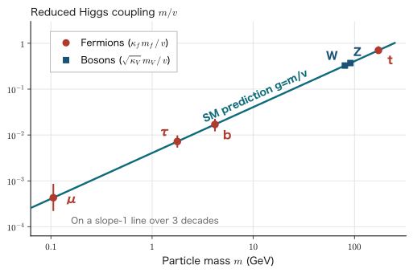
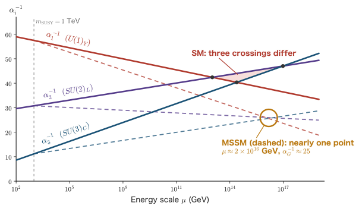

Chapter 15Beyond the Standard Model
Through Chapter 13 the Standard Model was completed: the gauge group $SU(3)_C\times SU(2)_L\times U(1)_Y$, three generations of quarks and leptons, and a single Higgs doublet. Once its 19 parameters (26 or more if neutrino masses are included) are fixed by experiment, every phenomenon can in principle be calculated. With the discovery of the Higgs boson in 2012, every particle predicted by the Standard Model had been found. Is the story, then, over?
It is not, because the Standard Model describes only 5% of the contents of the universe (its energy density). Precision measurements of the cosmic microwave background by the Planck satellite showed that the energy budget of the universe is “4.9% ordinary matter, 26.4% dark matter, and 68.5% dark energy.” The Standard Model describes only the first 4.9%. What the remaining 95% is made of, we do not know.
That is not all. The Standard Model does not explain why neutrinos are so light (Chapter 14). It does not explain why only matter remained while antimatter disappeared. It does not explain why there are three separate gauge coupling constants. It does not explain why electric charge is quantized in integer multiples of $e/3$. And, most frustratingly, it does not explain why the mass of the Higgs boson is $125$ GeV—why it is not pushed all the way up to $10^{19}$ GeV. This last problem is called the hierarchy problem. The quantum correction acts in the form
$$ \delta m_H^2 \;=\; -\,\frac{3 y_t^2}{8\pi^2}\,\Lambda^2 $$and if the cutoff $\Lambda$ is taken to be the Planck mass $1.22\times10^{19}$ GeV, the bare mass squared and the quantum correction must cancel each other to the 32nd digit. This is hard to call a coincidence.
This chapter surveys these topics “beyond the Standard Model”: grand unified theories, baryogenesis, supersymmetry, string theory, extra dimensions, and the nature of dark matter and dark energy. Let us draw one distinction here. For dark matter and dark energy, their very existence is established by observation (as we will see in Section 15.5, four independent lines of evidence—rotation curves, gravitational lensing, the Bullet Cluster, and the cosmic microwave background—require dark matter, and dark energy corresponds to the observed fact of accelerated expansion). What is not established is their nature, and none of the theories that explain it has been confirmed experimentally. For the other topics, even their existence is a hypothesis. We say so honestly. Writing something unestablished as if it were established is the thing a textbook should avoid most of all.
With that understood, this chapter has a very concrete exit for materials scientists: materials as detectors. Experiments that try to catch dark matter are low-background materials science in its ultimate form: crystals in which $^{238}$U has been reduced to below $10^{-13}$ g/g, $\mathrm{TeO_2}$ bolometers operating at $10\ \mathrm{mK}$, PTFE that reflects more than $95\ \%$ of the scintillation light ($175$ nm) of liquid Xe, Ge single crystals whose net impurity concentration has been reduced to $10^{10}\ \mathrm{cm^{-3}}$, and superconducting sensors that gain $\dd R/\dd T$ from the steepness of the transition edge. Moreover, in axion searches it has become clear that the $\theta F\tilde F$ term of particle theory and the axion electromagnetic response of topological insulators are literally the same Lagrangian. In Section 15.6 we treat these not as analogies but with equations and numbers.
- The four production processes of the Higgs boson (ggF, VBF, VH, $t\bar tH$) and their cross sections, and why $\gamma\gamma$ and $ZZ^*$ are the “golden channels”
- The table of decay branching ratios, and a calculation that reproduces $\Gamma(H\to b\bar b)/\Gamma(H\to\tau\tau)$ from the color factor and the running mass
- Verification that the couplings are proportional to mass, $g_f=m_f/v$, and that $v=246.22$ GeV follows from $G_F$
- The current status of the muon anomalous magnetic moment $a_\mu$: what disagrees is not experiment and theory but two evaluation methods of the hadronic vacuum polarization
- A quantitative evaluation of the hierarchy problem: the scale of new physics required by naturalness, $\Lambda\lesssim2$ TeV
- Solving the one-loop renormalization group equations yourself to find the crossing point of $\alpha_1,\alpha_2,\alpha_3$ (in the Standard Model they do not meet; in the MSSM they meet at $2\times10^{16}$ GeV)
- Charge quantization in $SU(5)$: $Q_d=-1/3$ follows from the fact that “there are three colors”
- The proton lifetime formula $\tau\sim M_X^4/(\alpha_G^2m_p^5)$ and the resulting bound $M_X>4.8\times10^{15}$ GeV from the Super-Kamiokande limit
- The baryon asymmetry $\eta=6.1\times10^{-10}$, the three Sakharov conditions, the two reasons the Standard Model fails, and leptogenesis
- The three motivations for supersymmetry (cancellation of quadratic divergences, convergence of the coupling constants, a dark matter candidate), and the fact that it has not been found
- An honest account of the current status of string theory and extra dimensions, and the experimental tests of the inverse-square law of gravity
- The evidence for dark matter from rotation curves, gravitational lensing, the Bullet Cluster, and the CMB; the WIMP miracle; the axion and the strong CP problem
- The cosmological constant problem: $\rho_\Lambda^{1/4}=2.2$ meV and the discrepancy of a factor of $10^{122}$ from $M_{\rm Pl}^4$
- Connection to materials science: radiopurity as a materials metric, cryogenic bolometers and TES, liquid-Xe TPCs, NaI(Tl), high-purity Ge, superconducting cavities, and the axion electrodynamics of topological insulators
15.1 The Higgs Boson
15.1.1 July 4, 2012
On July 4, 2012, in the auditorium at CERN, the two experimental groups ATLAS and CMS each independently reported the discovery of a new particle near $125$ GeV. On the day of the announcement the significance was $5.0\sigma$ for ATLAS and $4.9\sigma$ for CMS; in the papers published later that year it was $5.9\sigma$ and $5.0\sigma$, respectively. Particle physics takes $5\sigma$ (a probability of $3\times10^{-7}$ of arising by chance) as the criterion for a discovery, so each of the two experiments reached this level on its own. In the following year, 2013, the Nobel Prize in Physics was awarded to Englert and Higgs.
To say that this particle is the Higgs boson, it is not enough that the mass fits. We must confirm the following three things.
- That the spin and parity are $J^{PC}=0^{++}$. From the angular distribution of the four leptons in $H\to ZZ^*\to 4\ell$, the $0^-$ and $2^+$ hypotheses were rejected with a confidence level of $99.9\ \%$ or more.
- That the coupling is proportional to the mass. This is the heart of the Higgs mechanism (Section 15.1.4).
- That the particle has a self-coupling. The cross section for $HH$ production is too small, and so a measurement of $\lambda$ has not yet been made. The HL-LHC is expected to finally bring this to within about $\pm50\ \%$.
The present situation is therefore “two confirmed, one still to come.” The measured mass is
. The total decay width is $\Gamma_H=4.07$ MeV according to the Standard Model prediction, which converts to a lifetime of
$$ \tau_H = \frac{\hbar}{\Gamma_H} = \frac{6.582\times10^{-22}\ \mathrm{MeV\,s}}{4.07\ \mathrm{MeV}} = 1.62\times10^{-22}\ \mathrm{s} $$. The total decay width itself can now also be measured directly by using off-shell production $H^*\to ZZ$, and values consistent with the prediction above have been obtained: $\Gamma_H=3.2^{+2.4}_{-1.7}$ MeV (CMS 2022) and $4.5^{+3.3}_{-2.5}$ MeV (ATLAS 2023). Compared with $m_H$, the ratio $\Gamma_H/m_H=3\times10^{-5}$ is extremely narrow. This is because the Higgs boson cannot decay for real into a $t\bar t$ pair or into a $W$ pair ($2m_t=345$ GeV and $2m_W=161$ GeV are both heavier than $m_H$), and so it has no choice but to go through virtual $W^*$ and $Z^*$. Ironically, had $m_H$ been a little heavier, the real decay into $WW$ would have opened, the total width would have broadened at once, and the branching ratio into $\gamma\gamma$ would have been crushed; had it been a little lighter, the branching ratio of $ZZ^*\to4\ell$ would have dropped sharply (at $m_H=115$ GeV it is $0.87\ \%$, only a third of the $2.62\ \%$ at $125$ GeV), and we would have lost one of the golden channels. $125$ GeV was the most convenient value for humans to study the Higgs boson precisely.
15.1.2 How to produce it — four production processes
There are four main processes that produce the Higgs boson in proton–proton collisions (Figure 15.1). Because the Higgs boson couples in proportion to mass, it can hardly be produced from light quarks. The contents of the proton are $u$, $d$, and gluons, and the Yukawa couplings of $u$ and $d$ are only about $10^{-5}$. So what actually works is either to run a heavy particle around a loop or to go through gauge bosons.
| Process | Symbol | Cross section [pb] | Share | Coupling vertex |
|---|---|---|---|---|
| Gluon fusion | $gg\to H$ | 48.6 | 88.2% | $y_t$ (triangle loop) |
| Vector-boson fusion | $qq\to qqH$ | 3.78 | 6.9% | $g_{HVV}=2m_V^2/v$ |
| $W$ associated production | $q\bar q\to WH$ | 1.37 | 2.5% | $g_{HWW}$ |
| $Z$ associated production | $q\bar q\to ZH$ | 0.88 | 1.6% | $g_{HZZ}$ |
| Top associated production | $gg\to t\bar tH$ | 0.51 | 0.9% | $y_t$ (direct) |
| Total | 55.1 | 100% |
Why do we end up “searching for one in a hundred million in a heap of junk”?
The total cross section for inelastic proton–proton scattering at $\sqrt s=13$ TeV is about $80$ mb $=8\times10^{10}$ pb (the TOTEM measurement is $79.5\pm1.8$ mb, and ATLAS gives $78.1\pm2.9$ mb). Compared with the Higgs production cross section of $55$ pb, we have
$$ \frac{\sigma_H}{\sigma_{\rm inel}} = \frac{55}{8\times10^{10}} = 6.9\times10^{-10} $$That is, only once in 1.5 billion collisions is a Higgs boson produced. If we then select $H\to\gamma\gamma$ (branching ratio $0.227\ \%$), the fraction becomes $1.56\times10^{-12}$, about once in 640 billion collisions. The LHC produces collisions at $40$ MHz, and in a single crossing an average of $30\text{--}60$ proton pairs interact. Even so, only $160\text{--}320$ $\gamma\gamma$ events are produced per day (with an average of $45$ interactions, $2.4\times10^2$ events). Multiplying by the annual operating efficiency, the effective figure is on the order of 100 events per day.
This is close to the feel of trace analysis in materials science. It is a “needle in a haystack” problem of the same order as detecting an impurity at $\mathrm{ppt}$ ($10^{-12}$) with ICP-MS, and in fact the two have the same structure in that reducing the background determines the sensitivity. We dig into this point thoroughly in Section 15.6.
15.1.3 How to find it — decay channels
The Higgs boson decays as soon as it is made (with a lifetime of $1.6\times10^{-22}$ s, even running at the speed of light it travels only $4.9\times10^{-14}$ m, which is one thousandth of the size of a hydrogen atom ($5.3\times10^{-11}$ m)). Therefore, all that can be observed are the decay products.
| Channel | Branching ratio $B$ | Partial width [MeV] | Ease of use in experiments |
|---|---|---|---|
| $b\bar b$ | 58.2% | 2.37 | △ The QCD jet background is $10^7$ times larger. Visible only when combined with VH production |
| $WW^*$ | 21.4% | 0.87 | △ For $\ell\nu\ell\nu$, no mass peak can be formed because of the neutrinos |
| $gg$ | 8.19% | 0.33 | × Two jets, completely buried in the background |
| $\tau^+\tau^-$ | 6.27% | 0.255 | ○ Can measure the coupling to the third-generation leptons |
| $c\bar c$ | 2.89% | 0.118 | × The efficiency of charm tagging is insufficient |
| $ZZ^*\to 4\ell$ | 2.62% ($4\ell$ is $0.0125$%) | 0.107 | ◎ Golden channel. Almost no background, mass resolution $1\text{--}2$ % |
| $\gamma\gamma$ | 0.227% | 0.0092 | ◎ Golden channel. Resolution $1\text{--}2$ %, the background is smooth and can be subtracted |
| $Z\gamma$ | 0.153% | 0.0062 | △ Only in 2023 did it finally reach $3.4\sigma$ |
| $\mu^+\mu^-$ | 0.0218% | 0.00089 | ○ Reached $3\sigma$ in 2020. The only clue to the coupling to the second generation |
Physical Meaning: The most frequent channel is the least useful
Looking at Table 15.2, we notice that the two channels used in the discovery ($\gamma\gamma$ and $ZZ^*\to4\ell$) are among the lowest in branching ratio. Together they amount to only $0.24\ \%$. On the other hand, $b\bar b$, which accounts for $58\ \%$, could not be used for the discovery at all.
The reason is the signal-to-background ratio. $H\to\gamma\gamma$ makes a sharp peak in the invariant mass of two high-energy photons. The background ($q\bar q\to\gamma\gamma$ and so on) is a smooth function of $m_{\gamma\gamma}$, so it can be fitted with a polynomial and subtracted. In contrast, the background to $H\to b\bar b$ is QCD $b\bar b$ production, whose cross section is $10^7$ times larger and whose shape is also similar.
This picture, in which “the minority is easier to measure than the majority,” is exactly the same in spectroscopy of materials. For example, in X-ray diffraction the Bragg peaks of the main phase are strong, but it is difficult to read off a trace amount of a second phase from them. Rather, aiming at a region where the main phase has no signal (forbidden reflections or particular $Q$ regions) gives a sensitivity that is higher by orders of magnitude. Looking for a window with zero background is the standard technique in both fields.
15.1.4 Is the coupling proportional to the mass?
The claim of the Higgs mechanism is clear. Since the mass of a fermion arises from the product of the Yukawa coupling and the vacuum expectation value (Chapter 13),
. Here the vacuum expectation value $v$ is determined by the Fermi constant:
Derivation: Obtaining $v=246.22$ GeV from $G_F$
Step 1: Collapse the $W$ exchange into a four-point contact interaction in the low-energy limit. As we saw in Chapter 12, for $q^2\ll m_W^2$ the $W$ propagator becomes $1/(q^2-m_W^2)\to-1/m_W^2$, and the amplitude is
$$ \mathcal{M} \simeq \frac{g_w^2}{8m_W^2}\,\big[\bar u\gamma^\mu(1-\gamma^5)u\big]\big[\bar u\gamma_\mu(1-\gamma^5)u\big] $$. Matching with Fermi theory gives
$$ \frac{G_F}{\sqrt2} = \frac{g_w^2}{8m_W^2} $$Step 2: Write $m_W$ in terms of $v$. By the Higgs mechanism of Chapter 13, $m_W=g_w v/2$. Substituting this, $g_w^2$ cancels:
$$ \frac{G_F}{\sqrt2} = \frac{g_w^2}{8\cdot (g_w v/2)^2} = \frac{g_w^2}{2g_w^2v^2} = \frac{1}{2v^2} $$Step 3: Solve for $v$.
Step 4: Insert the numbers. Using $G_F=1.1663787\times10^{-5}\ \mathrm{GeV^{-2}}$, we get
$$ \sqrt2\,G_F = 1.41421\times1.1663787\times10^{-5} = 1.64951\times10^{-5}\ \mathrm{GeV^{-2}} $$ $$ v = \left(1.64951\times10^{-5}\right)^{-1/2} = \left(6.06239\times10^{4}\right)^{1/2} = 246.22\ \mathrm{GeV} $$This $246.22$ GeV is fixed by a single experimental quantity, the measured lifetime of the $\mu$ particle (the muon). And by Eq. \eqref{eq:15-yukawa}, it becomes the “conversion factor” for all fermion masses. For example, the electron is given the small number $y_e=2.94\times10^{-6}$, for which no reason is known. The Standard Model does not explain the values of the masses. All it explains is the ratio of mass to coupling.
Figure 15.2 compares this proportionality law with experiment. Plotting the mass of the particle on the horizontal axis and the measured Higgs coupling on the vertical axis (with the conversion $\kappa_f m_f/v$ for fermions and $\sqrt{\kappa_V}\,m_V/v$ for vector bosons), the points lie on a single straight line over three orders of magnitude, from $4.3\times10^{-4}$ for the $\mu$ to $0.70$ for the $t$ (the vertical axis is scaled from $10^{-4}$ to $1$). The slope is $1$ and the intercept is $-\log_{10}v$.

Caution: This line is not an “explanation”
Looking at the line in Figure 15.2, one is tempted to say that “the Higgs mechanism has explained the origin of mass,” but this is not accurate. All that Eq. \eqref{eq:15-yukawa} says is that $m_f$ and $y_f$ are proportional. Why $y_t=0.99$ while $y_e=2.9\times10^{-6}$, that is, why there is a hierarchy as large as five and a half orders of magnitude, lies outside the Standard Model. This is called the flavor problem.
Translated into the language of condensed matter physics: the Higgs mechanism is a BCS-type statement that “when the order parameter $v$ becomes finite, a gap opens in the quasiparticles,” and why the coupling constant of each band has the value it has is a separate question. In both fields, the mechanism and the values of the material constants that enter the mechanism are questions at different levels of the hierarchy.
15.1.5 The anomalous magnetic moment of the muon, $a_\mu$
At the end of the section on the Higgs boson, we set down one of the most precise tools now available for exploring beyond the Standard Model: the anomalous magnetic moment of the muon,
$$ a_\mu \equiv \frac{g_\mu-2}{2} $$. The Dirac equation gives $g=2$ (Chapter 9). Every deviation $a_\ell$ from it is a quantum correction, and the lowest order is the Schwinger term $\alpha/2\pi=1.1614\times10^{-3}$ that we calculated in Chapter 10, Section 10.6.5. Since both theory and experiment for the muon’s $a_\mu$ have been pushed down to the order of $10^{-10}$, it becomes a test of the entire Standard Model with a single number.
As for the present state of experiment, the Muon $g-2$ experiment at Fermilab released its final result in 2025, and the world average combined with the BNL result is
. The relative precision is $0.12$ ppm. On the other hand, the Standard Model prediction is built up by adding the contributions (all units are $10^{-11}$):
$$ \frac{a_\mu^{\rm SM}}{10^{-11}} = \underbrace{116\,584\,719}_{\text{QED (up to five loops)}} \;+\;\underbrace{154}_{\text{electroweak}} \;+\;\underbrace{6845\ \text{or}\ 7045}_{\text{hadronic vacuum polarization (HVP)}} \;+\;\underbrace{92\ \text{or}\ 115}_{\text{hadronic light-by-light scattering}} $$The problem is the third term. HVP is the contribution in which quarks and gluons enter the self-energy of the $\gamma$, and perturbation theory cannot be used. There are two ways of evaluating it, and their values disagree.
- Data-driven ($R$-ratio): built up through a dispersion relation from the measured cross section of $e^+e^-\to$ hadrons. $6845\times10^{-11}$ (the 2020 theory white paper), total $a_\mu^{\rm SM}=116\,591\,810\,(43)\times10^{-11}$.
- Lattice QCD: the HVP is calculated directly on a lattice (BMW 2021 and later). $7045\times10^{-11}$ (the 2025 theory white paper; the hadronic light-by-light scattering was also revised from $92$ to $115$ at the same time), total $a_\mu^{\rm SM}=116\,592\,033\,(62)\times10^{-11}$.
Compared with Eq. \eqref{eq:15-amu}, the difference from the value of the 2025 theory white paper, which adopts lattice QCD, is $0.6\sigma$, so the two agree. The difference from the conventional data-driven value, however, is $2.6\times10^{-9}$, which is $5.8$ times ($5.8\sigma$) the quadrature sum of the two errors, $4.5\times10^{-10}$. In other words, the present discrepancy is not “experiment vs. theory” but lies between two evaluation methods on the theory side, and behind it is a disagreement among the measurements of the $e^+e^-\to\pi^+\pi^-$ cross section themselves (CMD-3 versus KLOE and BaBar).
Caution: The phrase “a $4\text{--}5\sigma$ discrepancy” should be put on hold for now
In 2021–2023 it was widely said that “there is a $4\text{--}5\sigma$ discrepancy in the muon $g-2$, a sign of new physics.” That statement holds when the data-driven HVP is adopted as the Standard Model prediction; if the lattice QCD HVP is adopted, the discrepancy disappears. Until it is settled which is correct, $a_\mu$ cannot be cited as “evidence for new physics.” This is also a lesson that applies to measurement in general: when the theoretical uncertainty exceeds the experimental precision, the difference is a difference of methods, not of physics.
Why the muon and not the electron?
Suppose a new particle of mass $\Lambda$ acts through a loop on a lepton of mass $m_\ell$. Its contribution is then
$$ \delta a_\ell \sim \frac{\alpha}{4\pi}\,\frac{m_\ell^2}{\Lambda^2} $$that is, proportional to $m_\ell^2/\Lambda^2$. Therefore the muon is more sensitive to new physics than the electron by a factor of $(m_\mu/m_e)^2=4.3\times10^4$.
In absolute precision the electron is far better. The uncertainty of $a_e=1.159\,652\,180\,59(13)\times10^{-3}$ is $1.3\times10^{-13}$, which is $1.1\times10^3$ times finer than the $1.45\times10^{-10}$ of $a_\mu$. But the sensitivity is larger by a factor of $4.3\times10^4$, so on balance $a_\mu$ gives a stronger constraint by a factor of about $40$. This is why so much effort is put into $a_\mu$.
Let us look at the scale that can be reached. Setting the right-hand side of the formula equal to the present uncertainty $1.45\times10^{-10}$, we get $\Lambda\simeq210$ GeV for a typical new-physics scenario that carries the loop factor $\alpha/4\pi$, and $\Lambda\simeq8.8$ TeV if the coupling is $O(1)$ and no $\alpha/4\pi$ is attached. This is a window that complements direct searches at the LHC.
15.1.6 The hierarchy problem
Here is the entrance to the main subject of this chapter. The Higgs is a scalar field, and the mass of a scalar field has no symmetry protecting it. This is the root of the problem.
Derivation: Quadratic divergence of the Higgs mass
Step 1: See which correction matters. The largest of the one-loop corrections to the Higgs mass is the loop of the most strongly coupled particle, namely the top quark. From the Yukawa interaction $\Lag_Y=-y_t\,\bar t\,t\,H/\sqrt2$, the self-energy is
$$ -\ii\Sigma(p^2) = -\left(\frac{y_t}{\sqrt2}\right)^{\!2} N_c\,(-1)\!\int\!\frac{\dd^4k}{(2\pi)^4}\, \Tr\!\left[\frac{\ii}{\slashed k-m_t}\,\frac{\ii}{\slashed k+\slashed p-m_t}\right] $$Here $N_c=3$ is the number of colors and $(-1)$ is the sign of the fermion loop (Chapter 10).
Step 2: Look only at the behavior at large $k$. As $k\to\infty$ the numerator of the trace goes as $\sim 4k^2$ and the denominator as $\sim k^4$, so the integrand behaves like $1/k^2$. Therefore
$$ \Sigma \sim \frac{y_t^2 N_c}{2}\int^\Lambda\!\frac{\dd^4k}{(2\pi)^4}\,\frac{4}{k^2} $$Since $\dd^4k\sim k^3\dd k$, the integrand becomes $k\,\dd k$, and the integral diverges as $\Lambda^2$. Following the coefficient carefully, we obtain
Step 3: Insert numbers. From $y_t=0.992$ we have $y_t^2=0.984$, so the coefficient is
$$ \frac{3\times0.984}{8\pi^2} = \frac{2.951}{78.96} = 0.0374 $$Taking the cutoff to be the Planck mass, $\Lambda=M_{\rm Pl}=1.22\times10^{19}$ GeV, we have $\Lambda^2=1.49\times10^{38}\ \mathrm{GeV^2}$, and
$$ \abs{\delta m_H^2} = 0.0374\times1.49\times10^{38} = 5.57\times10^{36}\ \mathrm{GeV^2} $$Step 4: Compare with the observed value. We have $m_H^2=(125.25)^2=1.569\times10^4\ \mathrm{GeV^2}$. That is,
$$ \frac{\abs{\delta m_H^2}}{m_H^2} = \frac{5.57\times10^{36}}{1.569\times10^{4}} = 3.5\times10^{32} $$The bare mass squared $m_{H,0}^2$ and the quantum correction $\delta m_H^2$ are both of order $10^{36}\ \mathrm{GeV^2}$, yet their difference must be $1.6\times10^4\ \mathrm{GeV^2}$. A tuning is required in which the two agree to 32 digits and differ at the 33rd digit. This is the hierarchy problem.
Why is this not a problem for fermions and gauge bosons?
The electron mass also receives a quantum correction, but it is
$$ \delta m_e = \frac{3\alpha}{4\pi}\,m_e\,\ln\!\frac{\Lambda^2}{m_e^2} $$which grows only logarithmically in $\Lambda$. Moreover, the correction is proportional to $m_e$. Even for $\Lambda=M_{\rm Pl}$, $\ln(\Lambda^2/m_e^2)=2\ln(1.22\times10^{19}/5.11\times10^{-4})=2\times51.5=103$, so $\delta m_e/m_e=(3/137.0/4\pi)\times103=0.18$, only $18\ \%$.
The reason is the chiral symmetry. In the limit $m_e\to0$, the symmetry that rotates left-handed and right-handed components independently, $\psi_{L,R}\to\ee^{\ii\theta_{L,R}}\psi_{L,R}$, is restored. A point where a symmetry is restored is protected against quantum corrections as well, so the correction must be proportional to $m_e$. Similarly, the masses of gauge bosons are protected by gauge symmetry. ’t Hooft called this technical naturalness: “if setting a parameter to zero increases the symmetry, then it is natural for that parameter to be small.”
For a scalar, however, there is no symmetry that is restored as $m_H\to0$. With nothing to protect it, the mass is pulled up to the cutoff scale. Supersymmetry (Section 15.4) is the idea of providing each scalar with a fermionic partner, thereby transplanting the protection that the chiral symmetry gives fermions onto the scalar.
In the language of condensed matter physics, this has the same structure as the worry of Ginzburg–Landau theory that “the mass term of the order parameter (the distance from $T$, $a(T-T_c)$) is not protected by a symmetry and is therefore determined at the microscopic scale.” The correspondence stops here, however. In superconductivity, the BCS exponential function $\Delta=2\hbar\omega_D\ee^{-1/N(0)V}$ naturally produces the huge hierarchy $T_c\ll E_F$, whereas for the Higgs no mechanism corresponding to that “exponential function” has yet been found. That is the essence of the hierarchy problem. (Note that the extreme difficulty of predicting $T_c$ from first principles to within a precision of a few $\%$ is a separate problem; it comes mainly from the exponential sensitivity of the form $\exp(-1/\lambda)$ in the McMillan and Allen–Dynes formulas and from the treatment of electron correlation and anharmonicity.)
Responses to the hierarchy problem have historically fallen into four groups.
- Introduce a new symmetry (supersymmetry). The boson and fermion loops cancel because of their opposite signs, and $\Lambda^2$ disappears.
- Make the Higgs a composite particle (technicolor, composite Higgs). $\Lambda$ stops at the compositeness scale. However, this fits poorly with electroweak precision measurements.
- Lower $\Lambda$ itself (extra dimensions). If the scale at which gravity becomes strong is lowered to the TeV scale, the huge number $M_{\rm Pl}$ does not exist in the first place.
- Accept the tuning (anthropic principle, multiverse). The argument is that among $10^{500}$ vacua, observers arise only in those in which $m_H$ happens to be small.
Items $1$–$3$ all predict new particles at the TeV scale. The LHC accumulated $140\ \mathrm{fb^{-1}}$ in Run 2 ($13$ TeV, 2015–2018) and is adding further data in Run 3 ($13.6$ TeV, 2022–), but not a single new particle has been found. This is a weighty fact. We treat it honestly in Section 15.4.
15.2 Grand Unification
15.2.1 Why consider “unification”? — Charge quantization
The gauge group of the Standard Model is $SU(3)_C\times SU(2)_L\times U(1)_Y$, a direct product of three factors. Three factors means three independent coupling constants, and the theory does not answer the question “why do $g_3$, $g_2$, and $g'$ have these values?”
That alone might be tolerable, but the existence of $U(1)_Y$ gives rise to a more concrete complaint. Group-theoretically, the charge of a $U(1)$ can be anything. The irreducible representations of $U(1)$ are $\ee^{\ii q\theta}$, and $q$ may be any real number. Experiment, however, shows that the charges of the electron and the proton cancel with the astonishing precision
$$ \frac{\abs{Q_p+Q_e}}{e} < 1\times10^{-21} $$(from experimental tests that neutral matter is truly neutral). The charges of the quarks are exactly $2/3$ and $-1/3$, not $0.6670$ or $0.3334$. Why are they quantized so precisely?
Why? Charge is quantized in a non-Abelian group
Recall $SU(2)$. As we saw in Chapter 5, the eigenvalues of the generator $T_3$ of $SU(2)$ can take only the discrete values $-j,-j+1,\dots,j$, that is, discrete half-integer or integer values. This is because $SU(2)$ is non-Abelian and compact: the commutation relation $[T_+,T_-]=2T_3$ ties the eigenvalues down in steps.
If the charge $Q$ were one of the generators of some larger simple group (a group with no $U(1)$ factor), the eigenvalues of $Q$ would be quantized automatically for the same reason. The relation “the charges sum to zero” also follows from the fact that the generators of $SU(N)$ are traceless, $\Tr\,T^a=0$.
Charge quantization is the strongest motivation for considering grand unification. It is an explanation of an experimental fact, not a matter of aesthetics.
15.2.2 $SU(5)$ — The minimal unification
The smallest simple group containing the gauge group of the Standard Model is $SU(5)$ (Georgi–Glashow, 1974). Counting ranks, $SU(3)$ has rank 2, $SU(2)$ has rank 1, and $U(1)$ has rank 1, for a total of 4, and the rank of $SU(5)$ is $5-1=4$, a perfect match.
The 15 fermions of one generation (the left- and right-handed $u,d$ in each of three colors $=12$, the left- and right-handed $e^-$ $=2$, and $\nu_{eL}=1$) fit exactly into two irreducible representations of $SU(5)$, $\bar{\bm 5}$ and $\bm{10}$:
In the decomposition $3+2=5$, the first three components are color and the last two are weak isospin. Let us see how strong a claim this arrangement makes.
Derivation: $Q_d=-1/3$ follows from there being three colors
Step 1: The charge is a generator of $SU(5)$. All generators of $SU(5)$ are traceless Hermitian $5\times5$ matrices. The charge $Q$ is one of them, so acting on $\bar{\bm 5}$ it can be written as a diagonal matrix
$$ Q = \mathrm{diag}\big(Q_{d^c},\,Q_{d^c},\,Q_{d^c},\,Q_{e^-},\,Q_{\nu}\big) $$(the three color components must have the same value because of the $SU(3)$ symmetry).
Step 2: Impose the traceless condition. From $\Tr\,Q=0$,
$$ 3\,Q_{d^c} + Q_{e^-} + Q_{\nu} = 0 $$Here the coefficient $3$ is the number of colors.
Step 3: Include the neutral neutrino. Since $Q_\nu=0$,
$$ 3\,Q_{d^c} = -\,Q_{e^-} = +1 \qquad\Longrightarrow\qquad Q_{d^c} = +\frac13 $$Since $d^c$ is the antiparticle of the $d$ quark, $Q_d=-1/3$.
Step 4: Check the charge of the proton. Applying the same argument to the $\bm{10}$ representation gives $Q_u=+2/3$. The $\bm{10}$ is the antisymmetric part of $\bm5\otimes\bm5$ (the antisymmetric part of $\bar{\bm5}\otimes\bar{\bm5}$ is $\overline{\bm{10}}$ instead). The charges of $\bm5$ are those of $\bar{\bm5}$ with the signs reversed, $\left(-\frac13,-\frac13,-\frac13,+1,0\right)$, so the charge of the component $[ij]$ of the antisymmetric tensor is fixed by $Q_i+Q_j$. A pair of two color components has $Q=-\frac23$, and this is $u^c$ (that is, $Q_{u^c}=2Q_d=-2Q_{d^c}$); a pair of a color component and $e^+$ has $Q=-\frac13+1=+\frac23$, and this is $u$; a pair of a color component and $\bar\nu$ has $Q=-\frac13$, and this is $d$; and the pair of $e^+$ and $\bar\nu$ has $Q=+1$, and this is $e^c$. Therefore
$$ Q_p = 2Q_u + Q_d = \frac43 - \frac13 = 1 = -Q_{e^-} $$holds. The charges of the proton and the electron cancel exactly because the quarks come in three colors and because quarks and leptons sit in the same multiplet. The experimental precision of $10^{-21}$ holds exactly and automatically in the theory. This is the most beautiful achievement of $SU(5)$.
| Group | Rank | Number of gauge bosons | How one generation fits | Features |
|---|---|---|---|---|
| $SU(3)\times SU(2)\times U(1)$ | 4 | $8+3+1=12$ | Spread over 5 irreducible representations | The Standard Model. Charge quantization is not explained |
| $SU(5)$ | 4 | $24$ | $\bar{\bm5}\oplus\bm{10}$ | Minimal. New gauge bosons $X,Y$ (12 of them) cause proton decay |
| $SO(10)$ | 5 | $45$ | $\bm{16}$ (just one!) | Right-handed neutrinos enter automatically, and the seesaw mechanism arises naturally |
| $E_6$ | 6 | $78$ | $\bm{27}$ | Arises readily from heterotic models of string theory |
Of the 24 gauge bosons of $SU(5)$, 12 are those of the Standard Model (8 gluons, $W^\pm,W^3$, and $B$), but the remaining 12 are new bosons that convert quarks into leptons and back. They are the $X$ with charge $4/3$ and the $Y$ with charge $1/3$, in each of three colors $\times$ particle and antiparticle $=12$ in all. They connect the color components and the weak-isospin components within $\bar{\bm5}$, that is, they cause $d^c\leftrightarrow e^-$. Neither baryon number nor lepton number is conserved.
15.2.3 Do the running coupling constants meet?
If unification occurs, the three coupling constants should coincide at some scale $M_X$. The one-loop renormalization group equation derived in Chapter 11 reads, for $\alpha_i=g_i^2/4\pi$,
The key point is that $\alpha^{-1}$ is a linear function of $\ln\mu$, so the crossing point can be found simply by extending straight lines. The coefficient $b_i$ is determined solely by the particle content that couples to the gauge group in question:
$$ b_i = -\frac{11}{3}C_2(G) + \frac23\sum_{\rm Weyl\ fermions}T(R) + \frac13\sum_{\rm complex\ scalars}T(R) $$For the Standard Model (three generations $+$ one Higgs doublet),
$$ b_1 = \frac{41}{10},\qquad b_2 = -\frac{19}{6},\qquad b_3 = -7 $$Here $b_3<0$ is asymptotic freedom (Chapter 11), and $b_1>0$ is QED-like screening. Note also that $\alpha_1$ is the coupling of $U(1)_Y$ correctly normalized within $SU(5)$,
$$ \alpha_1 \equiv \frac53\,\alpha_Y,\qquad \alpha_Y=\frac{g'^2}{4\pi} $$(the factor $5/3$ is the one that matches $\Tr\,Y^2$ to $\Tr\,T_3^2$).
Derivation: Finding the crossing points ourselves (the Standard Model case)
Step 1: Build the starting values at $m_Z$. The measured values are $\hat\alpha_{\rm em}^{-1}(m_Z)=127.95$ ($\overline{\rm MS}$ definition; see Section 10.6.4 of Chapter 10), $\sin^2\theta_W(\overline{\rm MS})=0.23122$, and $\alpha_s(m_Z)=0.1179$. In this section we use the $\overline{\rm MS}$ set throughout. Using $\alpha_2=\alpha_{\rm em}/\sin^2\theta_W$ and $\alpha_Y=\alpha_{\rm em}/\cos^2\theta_W$, we obtain
$$ \alpha_2^{-1}(m_Z) = \alpha_{\rm em}^{-1}\sin^2\theta_W = 127.95\times0.23122 = 29.58 $$ $$ \alpha_Y^{-1}(m_Z) = \alpha_{\rm em}^{-1}\cos^2\theta_W = 127.95\times0.76878 = 98.37 \;\Longrightarrow\; \alpha_1^{-1} = \tfrac35\times98.37 = 59.02 $$ $$ \alpha_3^{-1}(m_Z) = 1/0.1179 = 8.48 $$Step 2: Turn them into linear functions of $t\equiv\ln(\mu/m_Z)$. From Eq. \eqref{eq:15-rge},
$$ \alpha_1^{-1} = 59.02 - \frac{4.100}{2\pi}t,\quad \alpha_2^{-1} = 29.58 + \frac{3.167}{2\pi}t,\quad \alpha_3^{-1} = 8.48 + \frac{7.000}{2\pi}t $$Step 3: The crossing point $\alpha_1=\alpha_2$.
$$ 59.02 - \frac{4.100}{2\pi}t = 29.58 + \frac{3.167}{2\pi}t \;\Longrightarrow\; 29.44 = \frac{7.267}{6.2832}\,t = 1.1565\,t $$ $$ t = 25.46 \;\Longrightarrow\; \mu = m_Z\,\ee^{25.46} = 91.19\times1.14\times10^{11} = 1.0\times10^{13}\ \mathrm{GeV} $$Step 4: The other two crossing points. Similarly,
$$ \alpha_1=\alpha_3:\quad 50.54=\frac{11.10}{6.2832}t \Rightarrow t=28.61 \Rightarrow \mu=2.4\times10^{14}\ \mathrm{GeV} $$ $$ \alpha_2=\alpha_3:\quad 21.10=\frac{3.833}{6.2832}t \Rightarrow t=34.59 \Rightarrow \mu=9.6\times10^{16}\ \mathrm{GeV} $$Step 5: Conclusion. The three crossing points, $10^{13}$, $2.4\times10^{14}$, and $9.6\times10^{16}$ GeV, are scattered. With the particle content of the Standard Model, the three coupling constants do not meet at a single point. Around 1990, LEP measured $\sin^2\theta_W$ and $\alpha_s$ precisely, and in the 1991 analysis that used those values (Amaldi–de Boer–Fürstenau; see the references at the end of this chapter) the discrepancy became too significant to be explained by errors. Minimal $SU(5)$ is ruled out by this one point alone.

Connection to Materials Science: The running of a coupling constant is dielectric screening itself
There is no need to regard Eq. \eqref{eq:15-rge} as “difficult field theory.” It is exactly the same story as screening by a medium.
When a point charge is placed inside a dielectric, the surrounding polarization screens the charge, and the effective charge measured at distance $r$ becomes smaller,
$$ Q_{\rm eff}(r) = \frac{Q}{\varepsilon(r)} $$In wavenumber space this is $\varepsilon(q)$, a quantity routinely handled in first-principles calculations (the RPA dielectric function of “Introduction to Linear Response Theory,” Chapter 9, “Density Response Function and Dielectric Function,” and Chapter 10, “Screening — Thomas–Fermi and the Lindhard Function”). The same thing happens in QED. Because the vacuum is polarized by virtual electron–positron pairs, the charge of an electron seen from far away looks small. The closer we approach (the higher we raise $q$), the more we break through the screening and see the bare charge, so $\alpha$ increases:
$$ \alpha(q^2) = \frac{\alpha(0)}{1-\dfrac{\alpha(0)}{3\pi}\ln\dfrac{q^2}{m_e^2}} \qquad\Longleftrightarrow\qquad \alpha^{-1}(q^2)=\alpha^{-1}(0)-\frac{1}{3\pi}\ln\frac{q^2}{m_e^2} $$This is nothing other than Eq. \eqref{eq:15-rge} with $b=4/3$. Indeed, since $\ln(q^2/m_e^2)=2\ln(q/m_e)$,
$$ \frac{1}{3\pi}\ln\frac{q^2}{m_e^2} = \frac{2}{3\pi}\ln\frac{q}{m_e} = \frac{b}{2\pi}\ln\frac{q}{m_e} \quad\Longrightarrow\quad b=\frac43 $$This is the value for one Dirac fermion of charge $1$ (equivalent to two Weyl fermions), and it agrees with $\frac23\times2=\frac43$, obtained by inserting $T(R)=Q^2=1$ for two Weyl fermions into the general formula $\frac23\sum_{\rm Weyl}T(R)$ for $b$ ($2/3$ is the value for one Weyl fermion, so do not confuse the two). The decrease of $\alpha^{-1}(0)=137.04$ to $\hat\alpha^{-1}(m_Z)=127.95$ (that is, $\alpha$ grows from $1/137$ to $1/128$, an increase of $7\ \%$) is the amount stripped away by vacuum polarization due to charged particles between $m_e$ and $m_Z$.
The difference is that the sign is reversed for $SU(3)$ and $SU(2)$. In a non-Abelian group, the gauge bosons themselves carry charge. The paramagnetic contribution $-4C_2(G)$ from their spin ($g=2$) overwhelms the screening $+\frac13C_2(G)$ from their own orbital motion by 12 to 1 (for $SU(3)$, $C_2(G)=3$, so $-12$ and $+1$; for $SU(2)$, $C_2(G)=2$, so $-8$ and $+2/3$; the numbers differ from group to group). Adding the screening $+\frac23\sum T(R)$ from the fermions is still not enough, so $b_3=-7<0$ and the coupling “becomes weaker as we approach.” In a solid, this is the same picture as the sign being decided by the competition between Landau diamagnetism (screening) and Pauli paramagnetism (antiscreening); in a non-Abelian group the paramagnetism wins, which was the content of Section 11.6.2 of Chapter 11.
In short, grand unification is the question “extrapolate the three dielectric functions and see whether they take the same value at $10^{16}$ GeV.” For a materials scientist, it is the very familiar task of checking whether three extrapolated lines obtained from different measurements meet at a single point.
15.2.4 Proton decay
Since the $X$ and $Y$ bosons connect quarks and leptons, the proton can decay. The most closely watched decay mode is
$$ p \longrightarrow e^+ + \pi^0 $$Here $\Delta B=-1$ and $\Delta L=-1$, and $B-L$ is conserved (in $SU(5)$, $B-L$ remains as a global symmetry).
Derivation: Estimating the proton lifetime by dimensional analysis
Step 1: Write down the effective interaction. Since the mass of $X$ is far greater than $m_p$, it can be collapsed to a four-point contact interaction, just as in the Fermi theory of Chapter 12. The effective coupling is
$$ G_X \sim \frac{g_5^2}{M_X^2} = \frac{4\pi\alpha_G}{M_X^2} $$($\alpha_G$ is the unified coupling constant). It has dimension $[\mathrm{GeV^{-2}}]$.
Step 2: Match the dimension of the decay width. The decay width $\Gamma$ has dimension $[\mathrm{GeV}]$ and is proportional to the square of the amplitude, hence to $G_X^2\propto M_X^{-4}$. The only quantity in this problem that can fill the remaining dimension $\mathrm{GeV}^{5}$ is the proton mass. Therefore
Step 3: Insert numbers (minimal $SU(5)$). Let $M_X=1\times10^{15}$ GeV and $\alpha_G=1/40$. Since $m_p=0.9383$ GeV, $m_p^5=0.7273\ \mathrm{GeV^5}$.
$$ \Gamma = \frac{(1/40)^2\times0.7273}{(10^{15})^4} = \frac{6.25\times10^{-4}\times0.7273}{10^{60}} = 4.55\times10^{-64}\ \mathrm{GeV} $$Step 4: Convert to seconds and years. Using $\hbar=6.582\times10^{-25}\ \mathrm{GeV\,s}$,
$$ \tau_p = \frac{6.582\times10^{-25}}{4.55\times10^{-64}} = 1.45\times10^{39}\ \mathrm{s} = \frac{1.45\times10^{39}}{3.156\times10^{7}} = 4.6\times10^{31}\ \mathrm{years} $$This is the number that raised great expectations around 1980. For a lifetime of $10^{32}$ years, watching $10^{33}$ protons for one year would give 10 decays. It is within reach.
Step 5: But nothing was found. Super-Kamiokande has watched the protons in 22.5 kton of ultrapure water for more than 20 years and has found not a single event. The current lower limit is
$$ \tau_p/B(p\to e^+\pi^0) > 2.4\times10^{34}\ \mathrm{years}\quad(90\%\ \mathrm{C.L.},\ 2020) $$(the 2017 analysis gave $1.6\times10^{34}$ years). Since $\tau_p\propto M_X^4$, the lower limit on $M_X$ is
$$ M_X > 10^{15}\times\left(\frac{2.4\times10^{34}}{4.6\times10^{31}}\right)^{1/4} = 10^{15}\times(522)^{1/4} = 10^{15}\times4.78 = 4.8\times10^{15}\ \mathrm{GeV} $$On the other hand, as we saw in Section 15.2.3, the unification scale of minimal $SU(5)$ does not reach $10^{17}$ GeV even at the $\alpha_2=\alpha_3$ crossing point, and the $\alpha_1=\alpha_3$ crossing point is only $2.4\times10^{14}$ GeV. Because of these two facts, the non-convergence of the coupling constants and the non-observation of proton decay, minimal $SU(5)$ is dead. This is the clearest refutation of a theory in 1980s particle physics.
Caution: Grand unification itself is not dead
What died is the minimal $SU(5)$. In supersymmetric $SU(5)$ or $SO(10)$ one has $M_X\sim2\times10^{16}$ GeV, and from Eq. \eqref{eq:15-proton}, using $\alpha_G=1/40$ as is gives $\tau_p\sim4.6\times10^{31}\times20^4=7\times10^{36}$ years, while using the MSSM unified coupling $\alpha_G=1/24$ (a factor of $(24/40)^2$ because $\tau_p\propto\alpha_G^{-2}$) gives $\tau_p\sim3\times10^{36}$ years; both comfortably exceed the current lower limit.
However, supersymmetric grand unification has another decay mode, $p\to K^+\bar\nu$, through the dimension-5 operator $\mathcal{O}_5\sim QQQL/M_{H_C}$ mediated by squarks and the color-triplet Higgs (and its partner, the higgsino). What suppresses this mode is not the mass $M_X$ of the superheavy gauge bosons but the mass $M_{H_C}$ of the color-triplet Higgs, and the suppression is only by its first power. Even after including the one-loop factor and the suppression by the superpartner masses, $\tau\propto M_{H_C}^2m_{\rm SUSY}^2$ remains short, so this mode is in fact subject to the stricter constraint. The Super-Kamiokande lower limit is $\tau(p\to K^+\bar\nu)>5.9\times10^{33}$ years ($90\ \%$ C.L., 2014), and as long as the superpartners are at the TeV scale the minimal supersymmetric $SU(5)$ is excluded by it (if the superpartners are made much heavier, some room to evade the limit remains).
The next-generation experiments Hyper-Kamiokande (effective mass $188$ kton, scheduled to start operation in 2028) and DUNE (liquid argon, $40$ kton) will approach $\tau_p\sim10^{35}$ years in ten years of observation. Proton decay is still a live experimental target.
15.2.5 $SO(10)$ and neutrino masses
$SO(10)$ has an attraction that $SU(5)$ lacks: one generation of fermions fits into just a single irreducible representation, $\bm{16}$. The $\bar{\bm5}\oplus\bm{10}$ of $SU(5)$ contained 15 states, whereas $\bm{16}$ contains 16. The one left over is the right-handed neutrino $\nu_R$.
As we saw in Chapter 14, $\nu_R$ takes part in no gauge interaction at all, so there was no reason to include it in the Standard Model. In $SO(10)$, however, the representation does not close without it. And when $SO(10)$ is broken near $10^{16}$ GeV, $\nu_R$ acquires a Majorana mass $M_R\sim10^{14\text{--}15}$ GeV. Then, by the seesaw mechanism of Chapter 14,
$$ m_\nu \simeq \frac{m_D^2}{M_R} \sim \frac{(100\ \mathrm{GeV})^2}{10^{15}\ \mathrm{GeV}} = 10^{-11}\ \mathrm{GeV} = 0.01\ \mathrm{eV} $$which nearly agrees with the observed $\sqrt{\Delta m_{31}^2}=0.05$ eV. The grand-unification scale and the neutrino mass, two numbers obtained independently, are consistent with each other—this is why $SO(10)$ is still regarded as a leading candidate. And the leptogenesis of the next section uses the same $\nu_R$.
15.3 The Matter–Antimatter Asymmetry
15.3.1 The number $\eta\approx6\times10^{-10}$
There is only matter around us. Antimatter can be made only in accelerators, in cosmic rays, or in radioactive decay. There is no region made of antimatter on the Moon, on the Sun, or in any galaxy within our view (if there were, pair annihilation at the boundary would occur and should be visible as $511$ keV radiation or $\gamma$ rays).
Yet, as we saw in Chapters 6 and 10, the interactions of elementary particles are almost symmetric between particles and antiparticles. When the universe was hot, $\gamma\gamma\leftrightarrow q\bar q$ was in equilibrium, so there should have been equal numbers of quarks and antiquarks. Why did only matter remain?
Definition: The measure $\eta$ of the baryon asymmetry
We use the baryon number density $n_B=n_b-n_{\bar b}$ divided by the photon number density $n_\gamma$:
$$ \eta \equiv \frac{n_B}{n_\gamma} $$Since both $n_B$ and $n_\gamma$ are diluted as $a^{-3}$ with the expansion, $\eta$ stays constant throughout the expansion of the universe (except for the epoch when $n_\gamma$ increases slightly because of $e^+e^-$ pair annihilation).
This quantity is measured by two independent methods. One is Big Bang nucleosynthesis (the abundances of $^4$He, D, and $^7$Li depend sensitively on $\eta$); the other is the cosmic microwave background (the ratio of the heights of the acoustic peaks gives $\Omega_b h^2$). The two agree, giving
Specifically, from the Planck 2018 value $\Omega_b h^2=0.02237$ and the conversion formula $\eta=2.74\times10^{-8}\,\Omega_bh^2$, one obtains $\eta=6.13\times10^{-10}$.
Physical Meaning: Only one in $10^9$ pairs survived
Suppose that the early universe contained $N+\Delta N$ quarks and $N$ antiquarks. As the temperature falls, $N$ pairs annihilate into photons, leaving $\Delta N$ quarks (a baryon number of $\Delta N/3$, since each quark carries $1/3$) and about $2N$ photons. Then
$$ \eta \approx \frac{\Delta N/3}{2N} = \frac{\Delta N}{6N} \quad\Longrightarrow\quad \frac{\Delta N}{N} \approx 6\eta = 3.7\times10^{-9} $$That is, the matter was settled by a tiny difference: for every $10^9$ antiquarks there were $10^9+4$ quarks. If we ignore details such as the factor 3 and the change in the photon number at annihilation, in short $\Delta N/N\sim\eta$ in order of magnitude, “a few parts in a billion.” The atoms that now make up our bodies are the survivors.
If $\Delta N=0$, the baryons remaining after the freeze-out of annihilation would be about $n_B/n_\gamma\sim10^{-18}$ (determined by the ratio of the annihilation cross section to the expansion rate). The observed value is larger than this by 8 orders of magnitude. The asymmetry must be produced by the laws of physics, not imposed as an initial condition.
15.3.2 The three Sakharov conditions
Sakharov (1967) listed three conditions required to produce $\eta\ne0$ from an initial state with zero baryon number.
The three Sakharov conditions
- There exist processes that violate baryon number $B$. Without them $B$ is a conserved quantity, and if its initial value is zero it stays zero forever.
- Both $C$ and $CP$ are violated. If $C$ is conserved, the processes that increase $B$ and those that decrease it occur at the same rate and cancel. Even if $CP$ is conserved, the contributions cancel once left-handed and right-handed states are included (Chapter 6).
- There is a departure from thermal equilibrium. In exact thermal equilibrium, the $CPT$ theorem makes the particle and antiparticle masses equal, so the equilibrium distributions are also equal and $\langle B\rangle=0$ is maintained.
Derivation: Why thermal equilibrium does not work
Step 1: Equal masses from $CPT$. By the $CPT$ theorem of Chapter 6, the masses of a particle and its antiparticle are exactly equal: $m_b=m_{\bar b}$. This has also been verified experimentally to a precision of $\abs{m_{K^0}-m_{\bar K^0}}/m_{K^0}<6\times10^{-19}$.
Step 2: Write down the equilibrium distribution. In thermal equilibrium with zero chemical potential (if $B$ is violated, $B$ is not a conserved quantity and so cannot have a chemical potential), the particle number density is determined by the mass alone:
$$ n_b = \frac{g}{(2\pi)^3}\int \dd^3p\;\frac{1}{\ee^{E_b/T}+1},\qquad E_b=\sqrt{\pp^2+m_b^2} $$Step 3: They come out equal. If $m_b=m_{\bar b}$, then $E_b=E_{\bar b}$, and hence $n_b=n_{\bar b}$, so
$$ \langle B\rangle_{\rm eq} = n_b - n_{\bar b} = 0 $$Step 4: Conclusion. No matter how much $B$ and $CP$ are violated, once the system reaches equilibrium the baryon number is washed out. Therefore the asymmetry must be produced during a period away from equilibrium and then “frozen out”.
Connection to Materials Science: The third condition is the same equation as “freezing by quenching”
Sakharov’s third condition is very familiar to materials scientists. Consider the vacancy concentration in a crystal. The thermal-equilibrium concentration is
$$ c_{\rm eq}(T) = \exp\!\left(-\frac{E_f}{k_BT}\right) $$which is large at high temperatures. If the crystal is quenched from there, the vacancies try to disappear by diffusing to surfaces and dislocations, at a rate given by
$$ \frac{\dd c}{\dd t} = -\Gamma(T)\,\big[c - c_{\rm eq}(T)\big], \qquad \Gamma(T)=\nu_0\exp\!\left(-\frac{E_m}{k_BT}\right) $$The moment the cooling rate $\abs{\dd\ln T/\dd t}$ exceeds the relaxation rate $\Gamma$, $c$ can no longer keep up and is frozen at its value at that moment. The freeze-out temperature $T_f$ is determined by
$$ \Gamma(T_f) = \abs{\frac{\dd\ln T}{\dd t}}\bigg|_{T_f} $$That supersaturated vacancies remain in quenched steel, and that rapidly cooled glass retains a non-equilibrium structure, are both consequences of this equation.
What happened in the early universe is the same with only the symbols replaced. The relaxation rate $\Gamma$ corresponds to the interaction rate $n\langle\sigma v\rangle$, the cooling rate to the Hubble rate $H=\dot a/a$, and the freeze-out condition is
If $\Gamma>H$, the system is in equilibrium (it can keep up); if $\Gamma<H$, it is frozen (it cannot keep up). The relic abundance of dark matter (Section 15.5.4), neutrino decoupling, Big Bang nucleosynthesis—nearly every quantitative calculation in early-universe cosmology starts from this single equation.
The universe is a giant quench experiment, performed only once. The baryon asymmetry we see and the abundance of dark matter are both “frozen non-equilibrium quantities,” just like the residual vacancies in a quenched material. From this viewpoint, the argument of Section 15.5.4, in which the value $\Omega_{\rm DM}h^2=0.12$ is “worked backward to $\langle\sigma v\rangle$,” looks exactly like the task of working backward from a vacancy concentration to $E_m$.
15.3.3 Why the Standard Model falls short
The Standard Model in principle has mechanisms that satisfy Sakharov’s first and second conditions. However, the $CP$ violation of the second condition is quantitatively short by 10 orders of magnitude, and the third condition (non-equilibrium) is not satisfied at all for $m_H=125$ GeV—apart from the slight departure from equilibrium due to the cosmic expansion. Let us go through them one by one.
The first condition (violation of $B$): In the Standard Model, $B+L$ is violated by the chiral anomaly (Chapter 13, Section 13.6.3; Adler–Bell–Jackiw 1969).
$$ \partial_\mu j_B^\mu = \partial_\mu j_L^\mu = \frac{n_f\,g_w^2}{32\pi^2}\,W^a_{\mu\nu}\tilde W^{a\,\mu\nu}, \qquad \tilde W^{a\,\mu\nu} \equiv \frac12\,\epsilon^{\mu\nu\rho\sigma}W^a_{\rho\sigma} $$(Note that the definition of the dual tensor $\tilde W$ includes a factor $1/2$; if we write it in the form $\epsilon WW$, the coefficient becomes $n_fg_w^2/64\pi^2$.) The right-hand side also receives a contribution of the same form from $U(1)_Y$, $-n_fg'^2B_{\mu\nu}\tilde B^{\mu\nu}/32\pi^2$, but it does not affect the following discussion, so we have omitted it.
$B-L$ is conserved but $B+L$ is violated. The classical solution that mediates this process is called the sphaleron. Its energy is
$$ E_{\rm sph} \approx \frac{4\pi v}{g_w}\,B(\lambda/g_w^2) \approx \frac{4\pi\times246}{0.65}\times1.9 \approx 9\ \mathrm{TeV} $$which is strongly suppressed by $\ee^{-E_{\rm sph}/T}$ at low temperatures, but occurs freely in the early universe at $T>100$ GeV. Thus the first condition is satisfied.
The second condition (violation of $C$ and $CP$): $C$ is violated maximally by the weak interaction (Chapter 12). $CP$ is violated by the phase $\delta=1.14$ rad of the CKM matrix (the $K^0$ and $B^0$ experiments of Chapter 6). The problem, however, is its size. The degree of $CP$ violation is measured by the Jarlskog invariant
$$ J = \mathrm{Im}\big[V_{us}V_{cb}V_{ub}^*V_{cs}^*\big] = 3.08\times10^{-5} $$but the dimensionless quantity relevant to baryon-number generation, from the fact that $CP$ violation disappears if the masses become degenerate, is $J$ multiplied by all the inter-generation mass-squared differences:
$$ d_{CP} = J\,\frac{(m_t^2-m_c^2)(m_t^2-m_u^2)(m_c^2-m_u^2)(m_b^2-m_s^2)(m_b^2-m_d^2)(m_s^2-m_d^2)}{T^{12}} $$Putting in $T\sim100$ GeV gives $d_{CP}\sim10^{-20}$, which is short by ten orders of magnitude relative to the required $\eta\sim10^{-10}$.
The third condition (non-equilibrium): If the electroweak phase transition were a first-order phase transition, the walls of bubbles would provide the non-equilibrium. However, according to lattice calculations, for $m_H>72$ GeV the electroweak phase transition is not a first-order phase transition but a crossover. $m_H=125$ GeV lies entirely in that region. That is, no bubbles form, and no non-equilibrium arises.
Caution: The value of the Higgs mass eliminated one theoretical scenario
The scenario of electroweak baryogenesis was a leading candidate from the late 1980s to the early 1990s. However, lattice calculations placed the turning point to a crossover at $m_H\approx72$ GeV (Kajantie et al. 1996, Csikor et al. 1999), and around 2000, when LEP2 showed $m_H>114.4$ GeV by direct searches, this scenario had effectively been excluded within the Standard Model. The value $m_H=125$ GeV in 2012 settled the matter.
This is an example of “fixing a single mass value kills one theoretical possibility.” The discovery of a new particle more often reduces the theoretical options than increases them. Note also that models that extend the Higgs sector (for example, by adding one more doublet) to revive a first-order phase transition are being actively studied, and attempts are under way to search for the background gravitational waves from the phase transition with future gravitational-wave observations (LISA).
15.3.4 Leptogenesis
If the Standard Model fails, where do we get the asymmetry? The leading scenario is leptogenesis (Fukugita–Yanagida, 1986). The idea is simple: “create the asymmetry not in baryons but in leptons, and let sphalerons convert it into baryons.”
Derivation: The three steps of leptogenesis
Step 1: Prepare a heavy Majorana neutrino. We use the right-handed neutrinos $N_i$ (Majorana mass $M_i\sim10^{10\text{--}15}$ GeV) that appeared in the seesaw mechanism of Chapter 14. Through the Yukawa coupling it can decay both to
$$ N \to \ell + H, \qquad N \to \bar\ell + H^\dagger $$Since $N$ is its own antiparticle (Majorana), both of these are allowed. Lepton number is violated.
Step 2: Create a difference in branching ratios through $CP$ violation. If the Yukawa matrix $y_\nu$ is complex, interference between the tree diagram and the one-loop diagram produces a difference between the branching ratios of the two decays. Defining the degree of asymmetry as
$$ \epsilon = \frac{\Gamma(N\to\ell H)-\Gamma(N\to\bar\ell H^\dagger)}{\Gamma(N\to\ell H)+\Gamma(N\to\bar\ell H^\dagger)} $$one finds the form $\epsilon\sim\frac{3}{16\pi}\frac{M_1}{M_2}\frac{\mathrm{Im}[(y_\nu y_\nu^\dagger)_{12}^2]}{(y_\nu y_\nu^\dagger)_{11}}$. Typically $\epsilon\sim10^{-6}$.
Step 3: Freeze out through out-of-equilibrium decay. If the decay rate of $N$ is smaller than the Hubble rate ($\Gamma_N<H$, that is, the freeze-out condition of Eq. \eqref{eq:15-freezeout}), $N$ decays out of equilibrium, and a lepton asymmetry $Y_L=n_L/s$ remains. Typically $Y_L\sim\epsilon/g_*\sim10^{-6}/100=10^{-8}$.
Step 4: Convert to baryons through sphalerons. Since $B-L$ is conserved and sphalerons wash out $B+L$, in the end
(the coefficient comes from a chemical-equilibrium calculation for the Standard Model particle content with three generations and one Higgs doublet; Harvey–Turner 1990). Here $L_{\rm init}$ is the lepton asymmetry created by leptogenesis before the sphalerons begin to act, and is not the final-state lepton number (in the final state, $L_{\rm fin}=B-(B-L)=-\frac{51}{79}(B-L)=+\frac{51}{79}L_{\rm init}$). Therefore $Y_B\approx0.35\,\abs{Y_L}\sim3\times10^{-9}$ and $\eta=7.04\,Y_B\sim2\times10^{-8}$. This is somewhat large, but if $\epsilon$ and the washout efficiency are treated carefully, the observed value $6\times10^{-10}$ can be obtained.
Physical Meaning: The lightness of neutrinos and the existence of matter have the same origin
The appeal of leptogenesis is that it adds no new particles beyond the right-handed Majorana neutrinos $N_i$ introduced in Chapter 14 for the neutrino mass. The particles brought in to make neutrinos light serve directly as the source of the asymmetry. The seesaw mechanism ($m_\nu=m_D^2/M_R$) and leptogenesis ($\epsilon\propto M_1$) are determined by the same $y_\nu$ and $M_R$.
In other words, “why are neutrinos light?” and “why did only matter remain?” may have one and the same answer. This is one of the best-constructed stories among theories beyond the Standard Model.
However, direct verification is extremely difficult. It requires $M_1\gtrsim10^9$ GeV (the Davidson–Ibarra bound), which can never be produced at accelerators. Indirect clues are (i) neutrinoless double-beta decay (Chapter 14, Section 14.7, confirming the Majorana nature), (ii) the measurement of $\delta_{CP}$ (T2K, NOvA, Hyper-K, DUNE), and (iii) proton decay (a direct test of the violation of $B$; however, as we saw in Section 15.2.4, $p\to e^+\pi^0$ has $\Delta B=\Delta L=-1$ and conserves $B-L$, so what is responsible for the violation of $B-L$ itself is the $\Delta L=2$ process of (i)). All of these are experiments treated in other chapters of this book, and all are rate-limited by materials and detector technology.
15.4 Supersymmetry, String Theory and Extra Dimensions
15.4.1 Supersymmetry — motivation
Supersymmetry (SUSY) is a symmetry that exchanges bosons and fermions. Its generator $Q$ acts as
$$ Q\,\ket{\text{boson}} = \ket{\text{fermion}}, \qquad Q\,\ket{\text{fermion}} = \ket{\text{boson}} $$Since $Q$ is a spinor, this is an extension of the spacetime symmetry (the Poincaré group). In fact it obeys the anticommutation relation $\{Q_\alpha,\bar Q_{\dot\beta}\}=2\sigma^\mu_{\alpha\dot\beta}P_\mu$, so that acting twice produces a translation. The Coleman–Mandula theorem states that “spacetime symmetries and internal symmetries cannot be combined in any way other than a direct product,” but supersymmetry slips through a loophole by violating an assumption of this theorem (that the generators are bosonic); this is the Haag–Łopuszański–Sohnius theorem.
Derivation: Why the quadratic divergences cancel
Step 1: Contribution of the fermion loop. As found in Section 15.1.6,
$$ \delta m_H^2\big|_{\rm fermion} = -\frac{N_c\,y_f^2}{8\pi^2}\,\Lambda^2 + (\text{logarithmic term}) $$The sign is negative (because of the factor $(-1)$ of the fermion loop).
Step 2: Contribution of the scalar loop. If there is a scalar $\tilde f$ that couples to the Higgs ($\Lag\supset-\lambda_S\abs{H}^2\abs{\tilde f}^2$), its loop gives
$$ \delta m_H^2\big|_{\rm scalar} = +\frac{N_c\,\lambda_S}{16\pi^2}\,\Lambda^2 + (\text{logarithmic term}) $$The sign is positive (there is no factor $(-1)$ of the fermion loop). Here $N_c$ is the number of colors of that scalar: $N_c=3$ for a stop and $N_c=1$ for a scalar without color (it is the same factor as $N_c$ in Step 1).
Step 3: The relation imposed by supersymmetry. For each fermion $f$, supersymmetry requires two complex scalars $\tilde f_L,\tilde f_R$ with the same quantum numbers, and it fixes the coupling constant to be
$$ \lambda_S = \abs{y_f}^2 $$This is not a free parameter; it is a relation enforced by supersymmetry.
Step 4: Adding them up. Since there are two scalars,
$$ \delta m_H^2 = -\frac{N_c y_f^2}{8\pi^2}\Lambda^2 + 2\times\frac{N_c\abs{y_f}^2}{16\pi^2}\Lambda^2 = 0 $$The $\Lambda^2$ terms cancel exactly. Only the logarithmic term remains:
The fact that the sign is negative is meaningful. It is the reason electroweak symmetry breaking occurs radiatively in the MSSM; that is, $m_{H_u}^2$ runs down to negative values and acquires a vacuum expectation value. In what follows only the magnitude matters, so we take the absolute value.
Step 5: The naturalness requirement. For the magnitude of Eq. \eqref{eq:15-susy-cancel} not to greatly exceed $m_H^2$, $m_{\tilde t}$ (the stop, the superpartner of the top quark) must be at most about $1$ TeV. With $y_t=0.99$ and $\ln(\Lambda/m_{\tilde t})\approx30$,
$$ \abs{\delta m_H^2} = \frac{3\times0.984}{4\pi^2}\times m_{\tilde t}^2\times30 = 2.24\,m_{\tilde t}^2 $$To keep this within a factor of 10 of $m_H^2=1.57\times10^4\ \mathrm{GeV^2}$ requires $m_{\tilde t}<265$ GeV, and even within a factor of 100 it requires $m_{\tilde t}<837$ GeV. Supersymmetry requires new particles below the TeV scale.
15.4.2 Three things supersymmetry solves at the same time
- The hierarchy problem: as shown above, the $\Lambda^2$ divergences cancel.
- Convergence of the coupling constants: when superpartners are added, the coefficients of the $\beta$ functions change to $b_1=33/5$, $b_2=1$, $b_3=-3$, and, as the dashed lines in Figure 15.3 show, the three couplings meet almost at a single point at $2\times10^{16}$ GeV. This was pointed out in 1991 by Amaldi, de Boer, Fürstenau, and others, and was the most impressive piece of circumstantial evidence for supersymmetry.
- A dark matter candidate: imposing $R$ parity $R=(-1)^{3(B-L)+2s}$ makes the lightest supersymmetric particle (LSP; in many models the neutralino $\tilde\chi_1^0$) stable. With a mass of $100$ GeV–$1$ TeV, a weak-interaction strength, and electric neutrality, it satisfies all the conditions for dark matter (Section 15.5.4).
Connection to Materials Science: Supersymmetric quantum mechanics and the $n=0$ Landau level of graphene
The “algebra” part of supersymmetry, taken out by itself, is called supersymmetric quantum mechanics. From the operators
$$ A = \frac{\dd}{\dd x} + W(x),\qquad A^\dagger = -\frac{\dd}{\dd x} + W(x) $$we construct two Hamiltonians:
$$ H_- = A^\dagger A = -\frac{\dd^2}{\dd x^2} + W^2 - W', \qquad H_+ = A A^\dagger = -\frac{\dd^2}{\dd x^2} + W^2 + W' $$$H_\pm$ have the same spectrum except for the ground state ($A\psi^-_n$ is an eigenfunction of $H_+$). Only the ground state of $H_-$, $\psi_0\propto\exp[-\int W\dd x]$, has no partner; it is called the zero mode.
A representative example of this in condensed matter is graphene in a magnetic field. Squaring the Dirac Hamiltonian $H=v_F\bm\sigma\cdot(\pp+e\bm A)$ gives
$$ H^2 = v_F^2\left[(\pp+e\bm A)^2 - e\hbar\,\sigma_z B\right] = \begin{pmatrix} 2v_F^2 e\hbar B\, a^\dagger a & 0\\ 0 & 2v_F^2e\hbar B\,(a^\dagger a+1)\end{pmatrix} $$which is precisely the pair $A^\dagger A$ and $AA^\dagger$. The Landau levels are therefore
$$ E_n = \pm\,\frac{\hbar v_F}{\ell_B}\sqrt{2n},\qquad \ell_B=\sqrt{\hbar/eB} $$and show a $\sqrt{n}$ dependence (completely different from $E_n=(n+1/2)\hbar\omega_c$ of an ordinary two-dimensional electron gas). The $n=0$ level exists on only one sublattice, which is exactly the zero mode of supersymmetric quantum mechanics.
The existence of this $n=0$ level is topologically protected by the Atiyah–Singer index theorem. It necessarily exists regardless of the details of impurities or potentials. The half-integer quantum Hall effect of graphene, $\sigma_{xy}=4e^2(n+1/2)/h$, can be observed even at room temperature thanks to the robustness of this zero mode.
Supersymmetry in particle physics has not been discovered, but the supersymmetry algebra itself is realized routinely in matter. The same mathematics has been proposed as a remedy for the hierarchy problem on the one hand, and on the other it protects the quantum Hall response of two-dimensional materials. Incidentally, the Darboux transformation, which yields the exact solutions of shape-invariant potentials (Pöschl–Teller, Morse, Coulomb, and so on) in a unified way, belongs to the same framework and is applied in scattering theory, for example to the construction of reflectionless potentials (Cooper–Khare–Sukhatme, Phys. Rep. 251, 267 (1995)). However, the norm-conserving, ultrasoft, and PAW pseudopotentials used in practice in first-principles calculations are a different line of method that matches the logarithmic derivative of the scattering phase to an all-electron calculation, and they have nothing to do with the Darboux transformation. The same word “pseudopotential” hides different content, so do not confuse them.
15.4.3 The fact that nothing has been found
We must write honestly. The LHC accumulated $140\ \mathrm{fb^{-1}}$ in Run 2 ($\sqrt s=13$ TeV) and is increasing this further in Run 3 ($13.6$ TeV), but not a single superpartner has been found. The main lower limits are as follows.
| Particle | Symbol | Standard Model counterpart | Lower mass limit | Naturalness requirement |
|---|---|---|---|---|
| Gluino | $\tilde g$ | Gluon | $\sim2.3$ TeV | $\lesssim1.5$ TeV |
| Stop | $\tilde t_1$ | Top quark | $\sim1.3$ TeV | $\lesssim0.5$ TeV |
| First- and second-generation squarks | $\tilde q$ | $u,d,s,c$ | $\sim1.9$ TeV | No constraint |
| Chargino | $\tilde\chi_1^\pm$ | $W$, Higgs | $\sim0.7$ TeV | $\lesssim0.3$ TeV |
| Slepton | $\tilde\ell$ | Charged lepton | $\sim0.7$ TeV | No constraint |
Comparing with the “Naturalness requirement” column, we see that the experimental lower limits already exceed it. Moreover, the value $m_H=125$ GeV itself is troublesome in the minimal supersymmetric Standard Model (MSSM). At tree level one obtains only $m_h<m_Z\abs{\cos2\beta}\le m_Z=91.2$ GeV, and raising it to $125$ GeV requires large loop corrections, that is, a heavy stop ($3$–$10$ TeV) or a large left–right mixing. But a heavy stop increases $\abs{\delta m_H^2}$ by Eq. \eqref{eq:15-susy-cancel} and again demands a fine-tuning of about $1\ \%$. This is called the little hierarchy problem.
Caution: This is the passage in this chapter that demands the most honesty
From the 1980s to the early 2010s, it was widely believed that supersymmetry would “surely be found once the LHC runs.” It was not found. Researchers differ in how they take this fact.
- We have not searched enough yet: LHC searches are based on “simplified models” that assume particular decay patterns, and they have low sensitivity to compressed spectra (small mass differences, producing only soft final states) and to long-lived particles. The HL-LHC will collect 20 times more data.
- The naturalness criterion was wrong: a $1\ \%$ fine-tuning may be acceptable. After all, “naturalness” is not a law of physics but the aesthetic sense of theorists.
- Supersymmetry lies at a higher scale: in split supersymmetry (split SUSY), one gives up on the hierarchy problem but keeps the convergence of the coupling constants and the dark matter candidate.
- The direction is different: the hierarchy problem is solved by another mechanism (extra dimensions, a composite Higgs, a relaxion, or something we do not know).
This book states the following. Supersymmetry is a beautiful and well-constructed hypothesis, and at present it has not a single piece of experimental support. For a textbook to keep calling it a “leading theory” would be dishonest to the reader. At the same time, it would also be wrong to write that it has been “refuted.” The correct statement is that it has not been tested.
15.4.4 String theory — the honest state of affairs
String theory regards elementary particles not as points but as one-dimensionally extended strings. The string tension is
$$ T = \frac{1}{2\pi\alpha'},\qquad \ell_s = \sqrt{\alpha'} \sim \ell_{\rm Pl} = \sqrt{\frac{\hbar G}{c^3}} = 1.62\times10^{-35}\ \mathrm{m} $$and different vibrational modes of the string correspond to different particles. There are three motivations.
- Quantization of gravity: in a point-particle field theory, graviton loops diverge as $\Lambda^n$ and cannot be renormalized. A string has a finite size $\ell_s$, which acts as a natural ultraviolet (UV) cutoff.
- The graviton appears automatically: the spectrum of the closed string necessarily contains a massless, spin-2 state. This is precisely the property of the graviton.
- Unification: gauge fields, matter fields, and gravity all appear as vibrational modes of the same string.
There is, however, a price. Requiring consistency (cancellation of the conformal anomaly) fixes the spacetime dimension to be
$$ D = 26\ (\text{bosonic string}),\qquad D = 10\ (\text{superstring}) $$Since we see four dimensions, we suppose that the remaining six dimensions are curled up to a size of about $\ell_s$ (compactification). The way of curling up is given by a six-dimensional space called a Calabi–Yau manifold. The topological types of known Calabi–Yau manifolds number only about $10^4$–$10^5$, but if one includes the choices of fluxes threading them, the number of vacua is said to be as large as $10^{500}$ (the landscape). And no principle is known that determines which compactification is our universe.
Caution: What this book can and cannot say about string theory
What can be said: string theory is mathematically extremely rich and has attracted many first-rate researchers for 40 years. It is the most widely studied candidate for a quantum theory including gravity, and it is a framework shown to be free of ultraviolet divergences within perturbation theory. (There are other candidates, such as loop quantum gravity, asymptotic safety, and causal dynamical triangulation, and none of them, string theory included, has had its nonperturbative consistency fully proved.)
What cannot be said: the prospect of experimental verification. To see the string scale $10^{-35}$ m directly requires an accelerator of $10^{19}$ GeV. The gap from the LHC’s $10^4$ GeV is 15 orders of magnitude. Even an Earth-sized accelerator would not reach it. The “predictions” at low energies (supersymmetry, extra dimensions, particular gauge groups) all depend on the compactification and are not unique.
If one strictly asks for falsifiability in Popper’s sense, current string theory does not satisfy the requirements of a physical theory. This is a problem acknowledged even by some string theorists, and a philosophy-of-science debate continues over whether falsifiability should be regarded as a requirement of science (Polchinski and Dawid have argued against this view). The position of this book is: “This is an attractive mathematical framework, and as a physical theory it has not yet entered the stage of verification.”
Connection to Materials Science: AdS/CFT has become a computational tool for strongly correlated electron systems
That string theory has not been experimentally verified and that the tools born from string theory are useless are separate matters. The most striking example is the AdS/CFT correspondence (Maldacena, 1997).
This is the claim that “a gravity theory in $d+1$ dimensional anti–de Sitter space” is equivalent to “a $d$-dimensional conformal field theory on its boundary.” What matters is that when the coupling on the boundary side is strong, the gravity-side description becomes classical (weakly coupled). That is, a strongly correlated system for which perturbation theory is unusable can be translated into a classical gravity calculation.
The most famous result to come out of this tool is the lower bound on the ratio of shear viscosity to entropy density:
This is called the KSS bound. The right-hand side corresponds to $6.08\times10^{-13}\ \mathrm{K\,s}$. The quark–gluon plasma (QGP) created at RHIC and the LHC showed $\eta/s\approx(1\text{--}2)\times\hbar/4\pi k_B$, the value closest to an ideal fluid among all known ones. The unitary Fermi gas of cold atoms also reaches $\eta/s\approx5\hbar/4\pi k_B$.
Applications to condensed matter include holographic superconductors, the linear resistivity $\rho\propto T$ of strange metals, and the lower bound on the Planckian dissipation time $\tau\sim\hbar/k_BT$. That the linear-$T$ resistivity observed in the normal phase of high-temperature superconductors is close to this “Planckian-limit dissipation” offers one perspective on a long-unsolved problem.
In short, experimental verification of string theory is hopeless, but the computational techniques that string theory has produced are already in use in areas adjacent to materials science. The value of a theory cannot always be measured by the testability of its predictions alone.
15.4.5 Extra dimensions and the inverse-square law of gravity
Arkani-Hamed, Dimopoulos, and Dvali (ADD, 1998) pointed out that there is no necessity for the compactification scale of string theory to be $\ell_{\rm Pl}$. If the extra dimensions are macroscopically large and only gravity can leak into them, the hierarchy problem can be explained as follows: “$M_{\rm Pl}$ looks large because gravity is diluted.”
Derivation: Finding the size $R$ of the extra dimensions
Step 1: Gauss’s law in $4+n$ dimensions. In $4+n$ dimensional spacetime, the gravitational potential between masses $m_1,m_2$ at a distance $r\ll R$ (inside the extra dimensions) is
$$ V(r) = -\,\frac{m_1m_2}{M_*^{\,n+2}}\,\frac{1}{r^{\,n+1}} $$Here $M_*$ is the true ($4+n$ dimensional) Planck mass. Since the lines of force spread out in $n$ additional directions, the power becomes stronger by $n$.
Step 2: For $r\gg R$ it looks four-dimensional. If the extra dimensions are curled up into a radius $R$, then for $r\gg R$ the lines of force have spread out completely in the extra directions, and beyond that point the ordinary $1/r$ is recovered. Matching the two gives
$$ V(r) = -\,\frac{m_1m_2}{M_*^{\,n+2}R^n}\,\frac1r \qquad\Longleftrightarrow\qquad \frac{1}{M_{\rm Pl}^2} = \frac{1}{M_*^{\,n+2}R^n} $$Step 3: Set $M_*=1$ TeV and find $R$. To solve the hierarchy problem we need $M_*\sim1$ TeV. For $n=2$, Eq. \eqref{eq:15-add} gives
$$ R = \frac{M_{\rm Pl}}{M_*^2} = \frac{1.22\times10^{19}\ \mathrm{GeV}}{(10^3\ \mathrm{GeV})^2} = 1.22\times10^{13}\ \mathrm{GeV^{-1}} $$We convert from natural units back to SI. Since $1\ \mathrm{GeV^{-1}}=\hbar c/1\ \mathrm{GeV}=1.973\times10^{-16}$ m,
$$ R = 1.22\times10^{13}\times1.973\times10^{-16}\ \mathrm{m} = 2.4\times10^{-3}\ \mathrm{m} = 2.4\ \mathrm{mm} $$Millimeters. This is a striking conclusion. It can be tested by checking the inverse-square law of gravity at distances below a millimeter.
Step 4: Changing $n$. For $n=1$, $R=M_{\rm Pl}^2/M_*^3=1.49\times10^{29}\ \mathrm{GeV^{-1}}=2.9\times10^{13}$ m, that is, $200$ astronomical units, the size of the solar system, which is clearly excluded. For $n=3$, $R=(M_{\rm Pl}^2/M_*^5)^{1/3}=5.3\times10^{7}\ \mathrm{GeV^{-1}}=1.0\times10^{-8}$ m $\approx10$ nm, and for $n=6$, $R=2.3\times10^{2}\ \mathrm{GeV^{-1}}=4.5\times10^{-14}$ m. The larger $n$ is, the more rapidly $R$ shrinks, and short-distance gravity experiments can no longer reach it.
In response, short-distance gravity experiments with torsion balances were carried out vigorously from the late 1990s. The Eöt-Wash group at the University of Washington assumed a Yukawa-type correction
$$ V(r) = -\frac{Gm_1m_2}{r}\Big[1+\alpha\,\ee^{-r/\lambda}\Big] $$and obtained the upper limit $\lambda<38.6\ \mu\mathrm{m}$ for $\alpha=1$ ($95\ \%$ C.L., 2020). Going back to Eq. \eqref{eq:15-add} and finding the lower limit on $M_*$ for $n=2$ (strictly speaking, for ADD with $n=2$ and two equal-radius directions, the strength of the Yukawa correction is not $\alpha=1$ but $\alpha=16/3$, and the same paper gives the somewhat stricter limit $R<30\ \mu$m on the ADD extra-dimension radius; here, as an order-of-magnitude estimate, we set $\lambda\approx R$), we obtain
$$ M_* = \sqrt{\frac{M_{\rm Pl}}{R}} > \sqrt{\frac{1.22\times10^{19}}{1.96\times10^{11}\ \mathrm{GeV^{-1}}}} = 7.9\times10^{3}\ \mathrm{GeV} \approx 8\ \mathrm{TeV} $$The most attractive case, $n=2$ with $M_*=1$ TeV, has therefore already been excluded. Similar limits have also been set at the LHC, from searches for missing-energy events caused by gravitons leaking into the extra dimensions.
Math Note: Warped extra dimensions (Randall–Sundrum)
Whereas ADD makes the extra dimensions “large” to create the hierarchy, Randall–Sundrum (1999) bends the extra dimension. Take the metric to be
$$ \dd s^2 = \ee^{-2k r_c\abs{\phi}}\,\eta_{\mu\nu}\dd x^\mu\dd x^\nu - r_c^2\,\dd\phi^2, \qquad \phi\in[0,\pi] $$The factor $\ee^{-2kr_c\abs\phi}$ is the warp factor. At the brane at $\phi=0$ (the Planck brane) the physics of $M_{\rm Pl}$ holds, while at the brane at $\phi=\pi$ (the TeV brane) the exponentially small scale
$$ m_{\rm eff} = \ee^{-k r_c\pi}\,M_{\rm Pl} $$is realized. To create a hierarchy of $10^{-16}$ we need
$$ \ee^{-kr_c\pi} = 10^{-16} \;\Longrightarrow\; kr_c\pi = 36.8 \;\Longrightarrow\; kr_c = 11.7 $$The selling point of this model is that a hierarchy of $10^{16}$ arises from a parameter of $O(10)$. The idea of using an exponential function to create a large ratio is exactly the same as $\Lambda_{\rm QCD}=\mu\,\ee^{-2\pi/\beta_0\alpha_s}$, which we saw in Chapter 11, and as $\Delta=1.76k_BT_c=2\hbar\omega_D\ee^{-1/N(0)V}$ in superconductivity. When physics creates a large number, the tool it uses is either the exponential function or the renormalization group.
15.5 Dark Matter and Dark Energy
15.5.1 Rotation curves — the first evidence
Consider the circular motion of a star at a distance $r$ from the center of a spiral galaxy. Balancing gravity against the centrifugal force gives
Here $M(r)$ is the total mass inside the radius $r$. The light of a galaxy is concentrated near its center, so if there were only luminous matter, $M(r)\to$ const at large $r$, and we would expect
$$ v(r) \propto \frac{1}{\sqrt r} \qquad(\text{Keplerian falloff}) $$This is just like the planets of the solar system, which orbit more slowly the farther away they are.
However, when Vera Rubin and Kent Ford measured many spiral galaxies in the 1970s, $v(r)$ did not fall off but was flat (Figure 15.5). Reading Eq. \eqref{eq:15-rotation} in reverse, $v=$ const means
$$ M(r) = \frac{v^2 r}{G} \propto r, \qquad \rho(r) = \frac{1}{4\pi r^2}\frac{\dd M}{\dd r} = \frac{v^2}{4\pi G r^2} \propto \frac{1}{r^2} $$That is, non-luminous mass with $\rho\propto r^{-2}$ envelops the galaxy. This is the dark matter halo.
Putting the position of the Sun ($r=8$ kpc, $v=220$ km/s) into this expression gives the dark matter density around us. It depends on the choice of halo model, but the standard value is
$$ \rho_{\rm DM}^{\rm local} = 0.3\text{--}0.4\ \mathrm{GeV/cm^3} = (5\text{--}7)\times10^{-25}\ \mathrm{g/cm^3} $$(In axion searches it is customary to use $0.45\ \mathrm{GeV/cm^3}$, near the upper end of the halo models; see Section 15.6.3.) This is so thin that $1$ liter contains only 3–4 WIMPs of $100$ GeV ($3.5\times10^3$ in $1\ \mathrm{m^3}$), yet this single number directly determines the expected event rate of direct-detection experiments (Section 15.6, Exercise 15.6).
![Rotation curve of a spiral galaxy (a schematic modeled on the Milky Way). The horizontal axis is the distance r from the galactic center (0–60 kpc) and the vertical axis is the rotation speed v. The observations (red solid line and circles) remain flat at around 220 km/s even outside 8 kpc. The luminous disk (indigo dashed line) peaks at about 185 km/s near 5 kpc and then falls off, neutral hydrogen gas (green dotted line) stays around 50 km/s, and the dark matter halo (amber dashed line) fills the gap to the observations at large radii, approaching 210 km/s.](figs/ch15_fig15-5.svg)
15.5.2 Gravitational lensing and the Bullet Cluster
With rotation curves alone, an alternative interpretation (MOND and the like) that “the law of gravity is modified at large scales” was also possible. What posed a serious difficulty for it was the direct measurement of mass distributions by gravitational lensing.
According to general relativity, light passing near an object of mass $M$ is bent by
$$ \theta = \frac{4GM}{c^2 b} $$(where $b$ is the impact parameter). By statistically analyzing the distortion of images of background galaxies (weak gravitational lensing), one can reconstruct the foreground mass distribution regardless of whether it is luminous.
The decisive case was the Bullet Cluster 1E 0657$-$558 (Clowe et al., 2006). At the site of a head-on collision of two galaxy clusters, the following was observed.
- The X-rays (from the hot plasma, which accounts for $\sim90\ \%$ of the baryonic mass) were decelerated by the collision and left behind at the center.
- The galaxies (collections of stars, with a small collision cross section) passed straight through and separated to the two sides.
- The center of mass indicated by gravitational lensing lies not with the X-rays but with the galaxies.
If the observation were explained by a modification of the law of gravity, the center of mass should coincide with the X-ray gas, which holds the most mass. It does not. Therefore a collisionless (weakly self-interacting) mass component exists separately from the baryons. This is regarded as the most direct evidence for the existence of dark matter.
This also places a limit on the self-interaction cross section of dark matter: $\sigma/m<1\ \mathrm{cm^2/g}$. Compared with the nucleon–nucleon cross section $\sigma/m\approx40\ \mathrm{mb}/1.67\times10^{-24}\ \mathrm{g}=2.4\times10^{-2}\ \mathrm{cm^2/g}$, the upper limit is about 40 times larger. That is, all the Bullet Cluster can tell us is that the self-interaction of dark matter does not exceed a few tens of times the strong interaction between nucleons. Conversely, models with a self-interaction of the same order as nuclear matter (self-interacting dark matter, SIDM) have not yet been excluded.
15.5.3 The CMB — the universe’s balance sheet
The power spectrum of the temperature fluctuations of the cosmic microwave background (CMB) shows a series of peaks due to acoustic oscillations. The position of the first peak determines the curvature of space, the ratio of the heights of the first and second peaks determines the baryon density, and the height of the third peak determines the dark matter density. The results of the Planck satellite (2018) are as follows.
| Component | $\Omega$ | $\Omega h^2$ | Present energy density | Identity |
|---|---|---|---|---|
| Dark energy | $0.685$ | — | $3.3\ \mathrm{GeV/m^3}$ | Unknown (cosmological constant?) |
| Dark matter | $0.264$ | $0.1200$ | $1.3\ \mathrm{GeV/m^3}$ | Unknown (WIMP? axion?) |
| Baryons | $0.0493$ | $0.02237$ | $0.24\ \mathrm{GeV/m^3}$ | Standard Model (protons, neutrons, electrons) |
| Photons | $5.4\times10^{-5}$ | — | $0.26\ \mathrm{MeV/m^3}$ | CMB ($T_0=2.7255$ K, $411$ per cm$^3$) |
| Neutrinos | $\gtrsim1.4\times10^{-3}$ | $\sum m_\nu/93.14\ \mathrm{eV}$ | $\gtrsim7\ \mathrm{MeV/m^3}$ | Standard Model ($336$ per cm$^3$. Computed using the oscillation-experiment lower limit $\sum m_\nu\ge0.06$ eV (normal ordering) and $h=0.674$) |
The total is $\Omega_{\rm tot}=1.000\pm0.002$; that is, the universe is flat. And the Standard Model describes only $4.9\ \%$ of this. This is the basis for the statement at the start of this chapter that the Standard Model “describes only $5\ \%$.”
15.5.4 WIMPs and the “WIMP miracle”
The most intensively studied candidate for dark matter is the WIMP (Weakly Interacting Massive Particle). Let us see why the “strength of the weak interaction” is special.
Derivation: The WIMP miracle
Step 1: The freeze-out condition. In the early universe, dark matter $\chi$ is in equilibrium $\chi\bar\chi\leftrightarrow$ Standard Model particles. When the temperature drops to $T<m_\chi$, $n_\chi\propto\ee^{-m_\chi/T}$ decreases rapidly, and eventually the annihilation rate falls below the Hubble rate and freezes out (Eq. \eqref{eq:15-freezeout}):
$$ n_\chi\langle\sigma v\rangle = H $$Step 2: The relic abundance formula. Solving the Boltzmann equation, the relic abundance after freeze-out takes the extremely simple form
What deserves attention is that $m_\chi$ does not appear (apart from a logarithmic dependence). What determines the relic abundance is the cross section alone.
Step 3: Back-calculating $\langle\sigma v\rangle$ from the observed value. Substituting $\Omega_{\rm DM}h^2=0.120$ gives
$$ \langle\sigma v\rangle = \frac{3\times10^{-27}}{0.120} = 2.5\times10^{-26}\ \mathrm{cm^3\,s^{-1}} $$Step 4: Estimating the weak-interaction cross section. If a particle of mass $m_\chi$ annihilates with coupling constant $\alpha_w$, dimensional analysis gives $\sigma\sim\alpha_w^2/m_\chi^2$. With $\alpha_w=1/30$ and $m_\chi=300$ GeV,
$$ \sigma \sim \frac{(1/30)^2}{(300\ \mathrm{GeV})^2} = \frac{1.11\times10^{-3}}{9\times10^{4}\ \mathrm{GeV^2}} = 1.23\times10^{-8}\ \mathrm{GeV^{-2}} $$Restoring the units: since $1\ \mathrm{GeV^{-2}}=0.3894\ \mathrm{mb}=3.894\times10^{-28}\ \mathrm{cm^2}$,
$$ \sigma = 1.23\times10^{-8}\times3.894\times10^{-28} = 4.8\times10^{-36}\ \mathrm{cm^2} $$Multiplying by the typical velocity at freeze-out, $v\approx0.3c=9\times10^{9}\ \mathrm{cm/s}$, we obtain
$$ \langle\sigma v\rangle \approx 4.8\times10^{-36}\times9\times10^{9} = 4.3\times10^{-26}\ \mathrm{cm^3\,s^{-1}} $$Step 5: Agreement. The value $2.5\times10^{-26}$ back-calculated from observation in Step 3 and the value $4.3\times10^{-26}$ estimated in Step 4 from “the strength of the weak interaction and a mass at the electroweak scale” agree to within a factor of 2. Cosmological observation points to a new particle at the electroweak scale—this is called the WIMP miracle.
Caution: The miracle has not yet been confirmed by experiment
The WIMP miracle was the guiding principle of dark matter searches for 30 years. However, direct-detection experiments have been steadily eating away at the predicted region. The upper limits on the spin-independent cross section with nucleons have been
- Around 2000: $10^{-42}\ \mathrm{cm^2}$ (early CDMS)
- 2013: $10^{-45}\ \mathrm{cm^2}$ (LUX)
- 2023: $2.6\times10^{-47}\ \mathrm{cm^2}$ (XENONnT)
- 2024: $2.2\times10^{-48}\ \mathrm{cm^2}$ (LZ, $m_\chi=40$ GeV)
an improvement of six orders of magnitude in a quarter century. Much of the parameter space of the naive supersymmetric neutralino has already been excluded. And once we reach the $10^{-48}$ range, coherent scattering of atmospheric and solar neutrinos (CE$\nu$NS) emerges as an irreducible background. This is called the neutrino fog. LZ has already touched its edge.
In response to this situation, the center of gravity of the searches is shifting toward (i) lighter dark matter (MeV–GeV), (ii) axions, (iii) primordial black holes, and (iv) very weakly coupled “hidden sectors.” Whichever direction is taken, it is the detector material that determines the sensitivity (Section 15.6).
15.5.5 The axion and the strong CP problem
Another leading candidate, the axion, was proposed not for the sake of dark matter but to solve an entirely different problem.
The QCD Lagrangian is allowed to have an additional term that we did not write in Chapter 11:
This term is gauge-invariant and renormalizable, so there is no reason to forbid it. But it violates $P$ and $CP$. Its consequence is an electric dipole moment (EDM) of the neutron, estimated as
$$ d_n \approx 3\times10^{-16}\,\bar\theta\ \ e\cdot\mathrm{cm} $$The experimental value is $\abs{d_n}<1.8\times10^{-26}\ e\cdot\mathrm{cm}$ ($90\ \%$ C.L., 2020), so
$$ \abs{\bar\theta} < 6\times10^{-11} $$Although $\bar\theta$ could be any angle from $0$ to $2\pi$, why is it $10^{-10}$ or smaller? This is the strong CP problem. It is a “why is it so small?” type of question, like the hierarchy problem. Here let us dispel one seemingly plausible misconception. One is tempted to say, “$CP$ symmetry is restored as $\bar\theta\to0$, so it is technically natural in ’t Hooft’s sense,” but this does not hold. In the Standard Model the phase of the CKM matrix, $\delta=1.14$ rad, already violates $CP$, so setting $\bar\theta=0$ does not restore $CP$ symmetry. Moreover, the second term of $\bar\theta=\theta_{\rm QCD}+\arg\det M_q$ comes from the phase of the same Yukawa matrices as the CKM phase. In other words, the Standard Model contains no symmetry that fixes $\bar\theta$ to zero while leaving the CKM phase in place. It is precisely because there is no protector that the smallness of $\bar\theta$ is a “problem” (the radiative correction to $\bar\theta$ from the CKM matrix itself is extremely small, $\sim10^{-16}$, so it is quantitatively stable; but that is not because “a symmetry protects it”). The Peccei–Quinn mechanism discussed below is an attempt to introduce such a protector anew.
Derivation: The Peccei–Quinn mechanism and the axion mass
Step 1: Make $\bar\theta$ a dynamical field. Peccei and Quinn (1977) introduced a new global $U(1)_{\rm PQ}$ symmetry and assumed that it is spontaneously broken at a scale $f_a$. Its Nambu–Goldstone boson is the axion $a$, and the replacement $\bar\theta\to\bar\theta+a/f_a$ is made.
Step 2: QCD generates a potential. Since $U(1)_{\rm PQ}$ is broken by the anomaly, $a$ is not an exact Goldstone boson, and nonperturbative QCD effects give it the potential
$$ V(a) \approx m_\pi^2 f_\pi^2\left[1-\cos\!\left(\bar\theta+\frac{a}{f_a}\right)\right] $$.
Step 3: $CP$ is restored at the minimum. The minimum of $V$ lies at $\bar\theta+\langle a\rangle/f_a=0$. That is, the axion field relaxes $\bar\theta$ to zero by itself. This is the Peccei–Quinn mechanism.
Step 4: The axion mass. From the second derivative of the potential,
$$ m_a^2 = \frac{m_\pi^2f_\pi^2}{f_a^2}\cdot\frac{m_um_d}{(m_u+m_d)^2} \quad\Longrightarrow\quad m_a = 5.70\ \mu\mathrm{eV}\times\frac{10^{12}\ \mathrm{GeV}}{f_a} $$The larger $f_a$ is, the lighter the axion and the weaker its coupling. Combining the lower limit $f_a>4\times10^8$ GeV from astrophysics (the cooling of SN1987A) with the upper limit from cosmological overproduction, the mass of dark matter axions is expected to lie in the range from $\mu$eV to meV.
Step 5: Coupling to photons. The axion couples to two photons:
The combination $\bm E\cdot\bm B$ is essential. When a strong static magnetic field $\bm B_0$ is applied, the axion is converted into a real photon (Primakoff conversion). This is the principle of the haloscope in Section 15.6.3, and at the same time it is a term of exactly the same form as the axion electromagnetic response of topological insulators.
15.5.6 Dark energy and the cosmological constant problem
In 1998, observations of distant Type Ia supernovae revealed that the expansion of the universe is accelerating (Riess, Perlmutter, et al.; Nobel Prize 2011). Acceleration requires negative pressure: in the equation of state $p=w\rho$ we must have $w<-1/3$. The observation gives $w=-1.03\pm0.03$, consistent with a cosmological constant ($w=-1$).
Derivation: The 120-orders-of-magnitude discrepancy
Step 1: The observed vacuum energy density. The critical density is
$$ \rho_c = \frac{3H_0^2}{8\pi G} $$Putting in $H_0=67.4\ \mathrm{km\,s^{-1}Mpc^{-1}}=67.4\times10^3/(3.086\times10^{22})\ \mathrm{s^{-1}}=2.184\times10^{-18}\ \mathrm{s^{-1}}$ gives
$$ \rho_c = \frac{3\times(2.184\times10^{-18})^2}{8\pi\times6.674\times10^{-11}} = \frac{1.431\times10^{-35}}{1.677\times10^{-9}} = 8.54\times10^{-27}\ \mathrm{kg/m^3} $$Multiplying by $\Omega_\Lambda=0.685$ gives $\rho_\Lambda=5.85\times10^{-27}\ \mathrm{kg/m^3}$. Converted to an energy density, $\rho_\Lambda c^2=5.26\times10^{-10}\ \mathrm{J/m^3}$.
Step 2: Convert to natural units. Since $1\ \mathrm{GeV^4}$ is the energy $1$ GeV $=1.602\times10^{-10}$ J divided by the volume $(\hbar c/1\ \mathrm{GeV})^3=(1.973\times10^{-16}\ \mathrm{m})^3=7.68\times10^{-48}\ \mathrm{m^3}$,
$$ 1\ \mathrm{GeV^4} = \frac{1.602\times10^{-10}}{7.68\times10^{-48}} = 2.086\times10^{37}\ \mathrm{J/m^3} $$Therefore
$$ \rho_\Lambda = \frac{5.26\times10^{-10}}{2.086\times10^{37}} = 2.52\times10^{-47}\ \mathrm{GeV^4} $$Step 3: Convert to an energy scale. Taking $\rho_\Lambda^{1/4}$,
$$ \rho_\Lambda^{1/4} = (2.52\times10^{-47})^{1/4}\ \mathrm{GeV} = 2.24\times10^{-12}\ \mathrm{GeV} = 2.24\ \mathrm{meV} $$This is a millielectronvolt. It is 1/10 of the thermal energy at room temperature, $k_BT=25$ meV, or equivalently the energy of a photon of wavelength $0.55$ mm. It resembles no scale of particle physics.
Step 4: The naive prediction of field theory. Summing the zero-point energy of a quantum field up to a cutoff $\Lambda$ gives
$$ \rho_{\rm vac} = \frac{1}{2}\int^{\Lambda}\frac{\dd^3k}{(2\pi)^3}\,\omega_k = \frac{1}{4\pi^2}\int_0^\Lambda k^2\sqrt{k^2+m^2}\,\dd k \sim \frac{\Lambda^4}{16\pi^2} $$With $\Lambda=M_{\rm Pl}=1.22\times10^{19}$ GeV we have $M_{\rm Pl}^4=2.22\times10^{76}\ \mathrm{GeV^4}$. Ignoring the factor $1/16\pi^2$,
$$ \frac{\rho_{\rm vac}}{\rho_\Lambda} = \frac{2.22\times10^{76}}{2.52\times10^{-47}} = 8.8\times10^{122} $$Step 5: Lowering the cutoff does not save us.
| Cutoff $\Lambda$ | Physical meaning | $\Lambda^4\ [\mathrm{GeV^4}]$ | $\Lambda^4/\rho_\Lambda$ | Orders of magnitude of discrepancy |
|---|---|---|---|---|
| $1.22\times10^{19}$ GeV | Planck mass | $2.2\times10^{76}$ | $8.8\times10^{122}$ | 123 |
| $2\times10^{16}$ GeV | Grand-unification scale | $1.6\times10^{65}$ | $6.3\times10^{111}$ | 112 |
| $246$ GeV | Electroweak scale $v$ | $3.7\times10^{9}$ | $1.5\times10^{56}$ | 56 |
| $0.2$ GeV | $\Lambda_{\rm QCD}$ | $1.6\times10^{-3}$ | $6.3\times10^{43}$ | 44 |
| $2.2\times10^{-12}$ GeV | Observed value | $2.5\times10^{-47}$ | $1$ | 0 |
Even if we lower the cutoff to the QCD scale, the lowest scale that is known to exist for certain, the discrepancy is still 44 orders of magnitude. The cosmological constant problem is the worst disagreement between theory and experiment known in physics. Even the $10^{32}$ of the hierarchy problem looks charming by comparison.
Why? Zero-point energy is “visible” in condensed matter
There is a curious asymmetry here. In condensed matter physics, the zero-point energy of the vacuum (the ground state) is observed as a real effect. Take the Casimir effect: the attractive force per unit area between parallel plates a distance $d$ apart is
$$ \frac{F}{A} = -\frac{\pi^2\hbar c}{240\,d^4} $$which for $d=100$ nm is $13\ \mathrm{N/m^2}$, a magnitude that actually matters in MEMS design. Likewise, the van der Waals force between molecules and the zero-point energy of lattice vibrations ($\sum_{\qq s}\hbar\omega_{\qq s}/2$, a quantity handled routinely in first-principles phonon calculations) are all real.
What these have in common is that what is being measured is a difference in zero-point energy: the change when a plate is moved, the change when isotopes are substituted, the change when the volume is varied (the Grüneisen parameter). The absolute value never appears.
Gravity alone, however, couples to the absolute value of the energy. This is the essence of the cosmological constant problem. Condensed matter physics can have the convenient escape route that “the origin of energy is arbitrary” only because gravity can be ignored. The moment gravity is included, the constant term we usually discard becomes an observable.
The current response to this problem, to be honest, is “we do not know.” If supersymmetry were exact, the zero-point energies of bosons and fermions would cancel to give zero, but supersymmetry is broken, and even if we cut off at the breaking scale ($>1$ TeV), a factor $(1\ \mathrm{TeV})^4/\rho_\Lambda=4\times10^{58}$ remains. The explanation by the anthropic principle (Weinberg, 1987: an upper bound, namely that if $\rho_\Lambda$ were too large, galaxies would not form and no observers would arise) correctly predicted the order of magnitude of $\rho_\Lambda$, but it is not a derivation from the laws of physics.
15.6 Connection to Materials Science — Materials as Detectors
The four sections from Section 15.2 onward were all about things that have “not been found”: proton decay, the mechanism of baryon-number generation, superpartners, dark matter, and the axion. The experiments that search for them share just one structure. The signal is extremely small, and the background dominates. Therefore what determines the sensitivity is neither the performance of the accelerator nor the precision of the theory, but the very materials from which the detector is made.
In this section we state concretely, with numbers, the demands that this field makes on materials science. Particle physics is one of the most demanding customers of materials science.
15.6.1 Radiopurity as a materials metric
Consider a direct search for dark matter. The goal is to catch a few nuclear-recoil events per year in a $1$ tonne target. On the other hand, what happens if we do nothing about it?
Derivation: How much $^{238}$U is allowed?
Step 1: Find the specific activity of $^{238}$U. Since the half-life is $T_{1/2}=4.468\times10^9$ years, the decay constant is
$$ \lambda = \frac{\ln2}{T_{1/2}} = \frac{0.6931}{4.468\times10^9\times3.156\times10^7\ \mathrm{s}} = \frac{0.6931}{1.410\times10^{17}\ \mathrm{s}} = 4.916\times10^{-18}\ \mathrm{s^{-1}} $$The number of atoms in 1 g of $^{238}$U is $N=6.022\times10^{23}/238=2.530\times10^{21}$. Therefore
$$ A = \lambda N = 4.916\times10^{-18}\times2.530\times10^{21} = 1.24\times10^{4}\ \mathrm{Bq/g} = 12.4\ \mathrm{kBq/g} $$Step 2: Determine the activity the experiment can tolerate. Suppose that, with a 1 tonne detector, we want to hold the background to at most 1 event per year. If the probability that a single decay falls in the signal region is $10^{-4}$ (including the effects of shielding and discrimination), the total allowed activity is $10^4\ \mathrm{decays/yr}=3.2\times10^{-4}$ Bq, that is, of the order of $3.2\times10^{-4}$ Bq per $1$ tonne $\approx0.3\ \mu\mathrm{Bq/kg}$. Indeed, the requirement of the most advanced experiments is precisely at the level of $1\ \mu\mathrm{Bq/kg}$.
Step 3: Convert to a mass fraction. Since $1\ \mu\mathrm{Bq/kg}=10^{-9}\ \mathrm{Bq/g}$, the allowed mass fraction of $^{238}$U is
Step 4: Compare with ordinary materials. The U concentration in the Earth’s crust is $2.7$ ppm, that is, $2.7\times10^{-6}$ g/g. Even an industrial “high-purity” reagent is typically around $10^{-9}$ g/g (ppb). The required value $8\times10^{-14}$ lies a further 4–5 orders of magnitude below that, and 7–8 orders of magnitude below the Earth’s crust.
Step 5: The measurement itself is difficult. The methods capable of measuring $0.08$ ppt are also limited: high-sensitivity ICP-MS (detection limit $\sim10^{-13}$ g/g), neutron activation analysis, and direct $\gamma$-ray counting with an underground HPGe detector ($\mu$Bq/kg level). The last method falls into a circularity: to measure, it needs a detector with the same purity that one wants to measure.
Connection to Materials Science: Radiopurity is the fourth purity metric
Materials scientists usually speak of purity on three scales: (i) chemical purity ($5\mathrm{N}$, $6\mathrm{N}$, and so on), (ii) electrical purity (carrier density, residual resistance ratio RRR), and (iii) crystal perfection (dislocation density, mosaic width). Particle-physics experiments add a fourth axis to these: radiopurity.
What matters is that this axis is independent of the other three. Even $6\mathrm{N}$ copper is unusable if it contains $^{60}$Co produced by cosmic rays. Even a perfect single crystal is no good if $^{210}$Pb adheres to its surface. Conversely, there can be a requirement that a polycrystal is acceptable but that $^{238}$U alone must be at the $10^{-14}$ level.
| Nuclide | Half-life | Specific activity | Equivalent to $1\ \mu\mathrm{Bq/kg}$ | Origin and countermeasures |
|---|---|---|---|---|
| $^{238}$U | $4.47\times10^9$ years | $12.4$ kBq/g | $8.0\times10^{-14}$ g/g | Raw ore. Ion exchange, solvent extraction, zone refining |
| $^{232}$Th | $1.41\times10^{10}$ years | $4.06$ kBq/g | $2.5\times10^{-13}$ g/g | Same as above. The $2615$ keV $\gamma$ ray of $^{208}$Tl is the most troublesome |
| $^{40}$K | $1.25\times10^9$ years | $31$ Bq/g (natural K) | $3.2\times10^{-11}$ g(K)/g | Glass and ceramics, the human body. NaI requires K $<20$ ppb |
| $^{222}$Rn | $3.82$ days | Gas | In air, $10\text{--}100$ Bq/m$^3$ | Degassing, N$_2$ purge, Rn-reduced air ($<0.1$ Bq/m$^3$) |
| $^{210}$Pb / $^{210}$Po | $22.3$ years / $138$ days | Surface-adhered | $<10\ \mathrm{nBq/cm^2}$ | Surface plate-out of Rn daughter nuclides. Polishing, etching, clean environment |
| $^{60}$Co | $5.27$ years | Cosmogenic | A problem in Cu | Underground storage and electrolytic refining (electroformed copper) give $<0.1\ \mu\mathrm{Bq/kg}$ |
| $^{39}$Ar | $269$ years | $1$ Bq/kg in atmospheric Ar | — | Reduced by a factor of $1400$ by using Ar from underground gas fields |
| $^{85}$Kr | $10.8$ years | From nuclear tests and reprocessing | ppq level in Xe | Cryogenic distillation and gas chromatography give $^{nat}$Kr/Xe $<10^{-13}$ mol/mol |
This table does not appear in materials science textbooks. In reality, however, extremely concrete materials engineering is being carried out: copper that has been electrolytically refined is stored underground and machined underground (the electroformed copper of MAJORANA), zone-refined Ge is purified down to $10^{10}\ \mathrm{cm^{-3}}$, and argon low in $^{39}$Ar, dug from an underground gas field, is used.
And this technology spreads beyond particle physics. Soft errors in semiconductor devices are caused by the $\alpha$ rays of $^{238}$U and $^{232}$Th in package materials, and the development of low-$\alpha$ solder ($<0.002\ \mathrm{counts/cm^2/h}$) addresses the same problem. It also became clear around 2020 that the coherence time of superconducting qubits is limited by quasiparticle generation due to environmental radiation. In the century of quantum devices, radiopurity is rather becoming a mainstream materials metric.
15.6.2 The three signal channels and how to choose materials
When a WIMP scatters elastically off an atomic nucleus, the recoiling nucleus runs through the crystal and deposits its energy. There are only three ways in which it does so.
- Heat (phonons): Ultimately almost all of the energy becomes lattice vibrations. This has the smallest loss, but measuring it requires cryogenic temperatures.
- Ionization: Creates electron-hole pairs. They are collected with an electric field in semiconductors or liquid noble gases.
- Scintillation: Excites luminescence centers, which emit photons. These are read out with photomultiplier tubes.
And if two or more are measured at the same time, the type of event can be identified. This is because electron recoils (backgrounds from $\gamma$ rays and $\beta$ rays) and nuclear recoils (WIMPs and neutrons) differ in the ratio of ionization to heat (in nuclear recoils the ionization is suppressed: Lindhard quenching). This discrimination power is the key to reducing the background to $10^{-3}$ or below.
Derivation: Energy resolution of a calorimeter and the demands on materials
Step 1: When energy $E$ is deposited in a system of heat capacity $C$. The temperature rise is
$$ \Delta T = \frac{E}{C} $$The smaller $C$ is, the larger the signal.
Step 2: Thermal fluctuations give the lower limit of the resolution. By the fluctuations of the canonical ensemble (the fluctuation–dissipation theorem; “Introduction to Linear Response Theory,” Chapter 8, “General Properties of Response Functions”), the energy of a system weakly coupled to a heat bath obeys
This is the lower limit. Lowering the temperature and reducing the heat capacity improves the resolution.
Step 3: Insert the Debye law. In an insulating crystal at low temperature, the electronic contribution vanishes and only the lattice specific heat remains:
$$ C = \frac{12\pi^4}{5}\,n\,R\left(\frac{T}{\Theta_D}\right)^3 = 1944\,n\left(\frac{T}{\Theta_D}\right)^3\ \mathrm{J/K} $$($n$ is the number of moles of atoms). Substituting this into Eq. \eqref{eq:15-calorimeter} gives $\Delta E\propto T^{5/2}\Theta_D^{-3/2}$. The higher the Debye temperature, the better the material.
Step 4: Insert numbers for the $\mathrm{TeO_2}$ of CUORE. Take $\Theta_D=232$ K, a crystal of $750$ g ($5\times5\times5\ \mathrm{cm^3}$), and $T=10$ mK. The formula mass of $\mathrm{TeO_2}$ is $159.6$ g/mol, and there are 3 atoms per formula unit, so the number of moles of atoms is
$$ n = \frac{750}{159.6}\times3 = 14.1\ \mathrm{mol} $$ $$ \left(\frac{T}{\Theta_D}\right)^3 = \left(\frac{0.010}{232}\right)^3 = (4.31\times10^{-5})^3 = 8.01\times10^{-14} $$ $$ C = 1944\times14.1\times8.01\times10^{-14} = 2.20\times10^{-9}\ \mathrm{J/K} $$That is, nanojoules per kelvin. A crystal as large as $750$ g has only about $10^{-11}$ of the heat capacity of $\mathrm{TeO_2}$ at room temperature (the specific heat is about $0.4\ \mathrm{J/g/K}$; since $\Theta_D=232$ K is lower than room temperature, it is close to the Dulong–Petit value $9R/159.6=0.47\ \mathrm{J/g/K}$; for $750$ g this is about $300$ J/K). This is the power of the $T^3$ law.
Step 5: The lower limit of the resolution.
$$ \Delta E_{\rm rms} = \sqrt{1.381\times10^{-23}\times(0.010)^2\times2.20\times10^{-9}} = \sqrt{3.04\times10^{-36}} = 1.74\times10^{-18}\ \mathrm{J} $$ $$ = \frac{1.74\times10^{-18}}{1.602\times10^{-19}} = 10.9\ \mathrm{eV} \quad\Longrightarrow\quad \Delta E_{\rm FWHM} = 2.355\times10.9 = 26\ \mathrm{eV} $$Step 6: In practice it is $7$ keV. What CUORE achieves is a FWHM $\approx7$ keV at $2615$ keV, which is 270 times worse than the thermodynamic lower limit. The difference comes from the noise of the temperature sensor (NTD-Ge thermistor), mechanical vibrations, the electronic circuits, and the fluctuations of the heat conduction linking the crystal to the heat bath. This factor of 270 is entirely room for materials science and sensor engineering. In fact, CUPID (the successor to CUORE) aims to remove the $\alpha$ background almost completely and improve the sensitivity by an order of magnitude by combining $\mathrm{Li_2MoO_4}$ crystals with light detection.
Connection to Materials Science: Why does the transition-edge sensor (TES) work so well?
What is used as the thermometer determines the performance of a calorimeter. There are two approaches.
(1) Semiconductor thermistor (NTD-Ge): This uses the variable-range hopping conduction of Ge doped by neutron irradiation. The resistance is
$$ R(T) = R_0\exp\!\left[\left(\frac{T_0}{T}\right)^{1/2}\right], \qquad \alpha \equiv \frac{\dd\ln R}{\dd\ln T} = -\frac12\sqrt{\frac{T_0}{T}} $$For $T_0\sim4$ K and $T=10$ mK, $\alpha=-10$. It is straightforward and stable, but the sensitivity is only of this order.
(2) Transition-edge sensor (TES): A superconductor is biased exactly in the middle of its transition temperature $T_c$ ($R\approx R_n/2$) and used there. If the transition width $\Delta T_c$ is $1$ mK or less, then
$$ \alpha = \frac{\dd\ln R}{\dd\ln T} \approx \frac{T_c}{\Delta T_c} \sim 100\text{--}1000 $$and a sensitivity 10–100 times that of the thermistor is obtained. The energy resolution improves as $\Delta E\propto\sqrt{k_BT^2C/\alpha}\times$ (geometric factor), and in X-ray spectroscopy a resolution of $1.5$ eV FWHM ($6$ keV, $\Delta E/E=2.5\times10^{-4}$) has been realized, a resolution 100 times better than that of semiconductor detectors.
Here it becomes entirely a materials issue. $T_c$ must be engineered to the desired value ($15$–$100$ mK). The $T_c$ of pure W is $15$ mK (the $\alpha$ phase), but phase control is difficult in thin films. So the proximity effect is used: one makes a bilayer film of a normal metal (Au, Cu) and a superconductor (Mo, Ir, Ti, Al), and tunes $T_c$ continuously through the thickness ratio. With a Mo/Au bilayer, $T_c$ can be set to $80$–$150$ mK by varying the Au thickness between $100$ and $300$ nm. This “design of $T_c$ by the proximity effect” is precisely thin-film materials science.
The readout also needs materials. The resistance change of the TES is read as a current change by a SQUID. This is a dc SQUID using Nb/AlO$_x$/Nb Josephson junctions, with flux noise at the level of $10^{-6}\Phi_0/\sqrt{\rm Hz}$. Furthermore, in recent years superconducting nanowire single-photon detectors (SNSPDs; $5$ nm thick nanowires of WSi or NbN) have reached the performance of counting photons of $0.1$ eV with a dark count rate of $10^{-4}\ \mathrm{s^{-1}}$ or less, and are beginning to be used in searches for light dark matter.
The sensitivity of particle physics is now rate-limited by the control of $T_c$ and the interface engineering of superconducting thin films. This is not an exaggeration; it is the reality exactly as written in experimental proposals.
Derivation: Why the mass of the target nucleus matters — kinematics of the recoil energy
Step 1: Kinematics of elastic scattering. A WIMP of mass $M_\chi$ and velocity $v$ scatters elastically off a nucleus of mass $m_N$ at rest. In the center-of-mass frame the magnitude of the momentum is $\mu v$ ($\mu=M_\chi m_N/(M_\chi+m_N)$ is the reduced mass), and the recoil energy at scattering angle $\theta^*$ is
$$ E_R = \frac{(\mu v)^2}{m_N}\big(1-\cos\theta^*\big) $$Step 2: The maximum. It is largest at $\theta^*=\pi$ (backscattering), where
Step 3: Look at the limits. For $M_\chi\gg m_N$, $E_R^{\max}\to2m_Nv^2$ (a heavy projectile knocks a light target: the lighter the target, the less it flies off), and for $M_\chi\ll m_N$, $E_R^{\max}\to2M_\chi^2v^2/m_N$ (a light projectile can hardly move a heavy target). The efficiency is highest when the two balance, at $M_\chi\approx m_N$.
Step 4: Insert numbers. Table 15.8 was computed with $v=220$ km/s ($v/c=7.34\times10^{-4}$, $v^2=5.39\times10^{-7}$) and $m_N=A\times0.9315$ GeV. For $M_\chi=100$ GeV Xe is the best, but for $M_\chi=1$ GeV Si gives a recoil energy 4.4 times larger than Xe.
Step 5: But the cross section scales as $A^2$. In spin-independent scattering, the scattering amplitudes from the nucleons in the nucleus add coherently, so
$$ \sigma_N = \sigma_p\,A^2\,\frac{\mu_N^2}{\mu_p^2}\,F^2(q) $$and heavier nuclei are favored (the $A^2=17237$ of Xe is 22 times the $A^2=789$ of Si). Heavy nuclei are favored in cross section; light nuclei are favored in kinematics. The competition between these two decides the choice of target material.
| Target nucleus | $A$ | $A^2$ | $M_\chi=1$ GeV | $M_\chi=10$ GeV | $M_\chi=100$ GeV | Representative experiments |
|---|---|---|---|---|---|---|
| Si | 28.1 | 789 | 38.2 eV | 2.15 keV | 17.7 keV | SENSEI, DAMIC-M, SuperCDMS |
| Ar | 40.0 | 1596 | 27.4 eV | 1.80 keV | 21.3 keV | DarkSide-20k |
| Ge | 72.6 | 5275 | 15.5 eV | 1.21 keV | 25.9 keV | SuperCDMS, EDELWEISS, CDEX |
| Te | 127.6 | 16282 | 8.9 eV | 0.77 keV | 26.7 keV | CUORE (mainly $0\nu\beta\beta$) |
| Xe | 131.3 | 17237 | 8.7 eV | 0.75 keV | 26.7 keV | LZ, XENONnT, PandaX-4T |
| W | 183.8 | 33797 | 6.2 eV | 0.56 keV | 25.1 keV | CRESST (CaWO$_4$) |
From Table 15.8 the strategy for choosing materials can be read off directly. To aim at a WIMP of $100$ GeV class, use liquid Xe (large mass, high $A^2$, self-shielding, discrimination possible); to aim at $1$ GeV or below, use Si, Al$_2$O$_3$, or superconductors (since the recoil energy is only a few tens of eV, a sensor whose threshold can be lowered below an eV is indispensable). The reason CRESST-III uses $\mathrm{CaWO_4}$ is likewise that the heavy W (high $A^2$) and the light O (kinematic sensitivity to light WIMPs) can be housed together in a single crystal. Choosing a compound crystal is, in itself, choosing the search region.
Connection to Materials Science: The liquid-Xe dual-phase TPC — the liquid itself is both detector and shield
The search for WIMPs of $100$ GeV class is currently dominated by the dual-phase time projection chamber (TPC) of liquid Xe (LZ, XENONnT, PandaX-4T). Because no crystal has to be grown, the demands of materials science shift from “the perfection of a solid” to “the purity and interfaces of a liquid.” There are four demands.
- Self-shielding: Xe has $Z=54$ and a high density of $2.9\ \mathrm{g/cm^3}$, so external $\gamma$ rays are absorbed within $\lambda\approx3$ cm. Therefore, if only the central region of a container holding several tonnes is used as the signal region, the outer Xe acts as a passive shield. Increasing the mass directly reduces the background—a property that solid-state detectors cannot imitate.
- S1/S2 discrimination: A recoil first emits prompt scintillation light (S1, VUV at $175$ nm). The electrons produced at the same time drift in an electric field ($\sim200$ V/cm) to the liquid surface, are extracted into the gas phase, and emit proportional scintillation (S2). Since the ratio of S1 to S2 differs between electron recoils and nuclear recoils, this suppresses the background to $10^{-3}$ or below. The drift time gives the depth, so the three-dimensional position of an event is also known (this is the prerequisite for using self-shielding).
- Walls that do not let $175$ nm escape: S1 is vacuum ultraviolet, so ordinary reflectors absorb it. The material used here is PTFE (polytetrafluoroethylene). In liquid Xe its diffuse reflectance at $175$ nm is $95\ \%$ or more, it has low radioactivity, and it can be used at cryogenic temperatures. Whether the reflectance is $95\ \%$ or $90\ \%$ changes the light-collection efficiency by nearly a factor of two, and that directly determines the energy threshold. An unassuming-looking materials constant—the VUV reflectance of a polymer—draws the boundary of the search region.
- Removal of $^{85}$Kr and $^{222}$Rn: Xe itself has no radioactive isotopes, but commercial Xe contains ppb to ppm of $^{\rm nat}$Kr, and the $^{85}$Kr in it (half-life $10.8$ years, $\beta$ rays) becomes a fatal background. The requirement is Kr/Xe $<10^{-12}$ (below ppt), which is achieved by cryogenic distillation and gas chromatography. $^{222}$Rn (half-life $3.8$ days) emanating from the container materials is a similar problem; it is handled by the radiopurity of the materials (Section 15.6.1) and by continuous Rn removal with activated charcoal. Moreover, to preserve the electron lifetime, a hot-getter circulation is always running to keep electronegative impurities ($\mathrm{O_2}$, $\mathrm{H_2O}$) below ppb.
To summarize, the performance of a liquid-Xe TPC is rate-limited by two materials issues: the purity of the liquid (at the $10^{-12}$ level) and the VUV optical properties of a polymer. What is demanded is quite different from the growth of solid crystals, but the standard of “guarantee $10^{-12}$” is the same.
15.6.3 Axion searches and materials — cavities and topological insulators
Axion searches are even more directly connected with materials science. There are two aspects.
(a) Haloscope: superconducting cavities and a high $Q$ value
Sikivie’s proposal (1983) is simple. Looking at $\Lag=g_{a\gamma\gamma}\,a\,\bm E\cdot\bm B$ in Eq. \eqref{eq:15-axion-photon}, we see that in a strong static magnetic field $\bm B_0$ the axion field $a$ produces an electric field $\bm E$. If a resonant cavity is placed there and its resonance frequency is tuned to $\nu=m_ac^2/h$, the signal is amplified by a factor of $Q$. The output power is
(here $\rho_a=0.45\ \mathrm{GeV/cm^3}$ is the local dark matter density. Section 15.5.1 and Exercise 15.6 use $0.3$–$0.4\ \mathrm{GeV/cm^3}$, but this lies within the spread due to the halo model. $V$ is the cavity volume, $C$ is the mode form factor ($C\approx0.69$ for TM$_{010}$), and $Q_L$ is the loaded $Q$ value). The coupling $g_{a\gamma\gamma}$ depends on the model, so the power is not fixed unless it is specified. Taking $m_ac^2=3\ \mu$eV ($f_a=1.9\times10^{12}$ GeV) and using Eq. \eqref{eq:15-axion-photon}, we obtain $g_{a\gamma\gamma}=1.2\times10^{-15}\ \mathrm{GeV^{-1}}$ for the KSVZ model ($E/N=0$, $g_\gamma=-0.97$), and $4.6\times10^{-16}\ \mathrm{GeV^{-1}}$ for the DFSZ model ($E/N=8/3$, $g_\gamma=0.36$), whose coupling is weaker. Inserting parameters close to those of the actual ADMX apparatus ($B_0=7.6$ T, $V=136$ L, $C=0.69$, $Q_L\sim10^5$) gives $P\approx1\times10^{-21}$ W (KSVZ) and $P\approx1.5\times10^{-22}$ W (DFSZ). Below we make estimates for the more demanding DFSZ case.
Example: How do we measure $10^{-22}$ W?
(1) Frequency. The frequency corresponding to an axion with $m_ac^2=3\ \mu$eV is
$$ \nu = \frac{m_ac^2}{h} = \frac{3\times10^{-6}\ \mathrm{eV}}{4.136\times10^{-15}\ \mathrm{eV\,s}} = 7.25\times10^{8}\ \mathrm{Hz} = 725\ \mathrm{MHz} $$This is just the mobile-phone band. That is why the experiment is carried out inside shielding of anechoic-chamber grade.
(2) Signal linewidth. Because of the velocity dispersion of dark matter axions, $\Delta v/c\sim10^{-3}$, the energy width is $\Delta E/E\sim(\Delta v/c)^2\sim10^{-6}$. Therefore the quality factor of the signal is $Q_a\sim10^6$, and the linewidth is
$$ \Delta\nu_a = \frac{\nu}{Q_a} = \frac{7.25\times10^8}{10^6} = 725\ \mathrm{Hz} $$(3) Noise power. Suppose the system noise temperature is $T_{\rm sys}=0.5$ K (dilution refrigerator $+$ a Josephson parametric amplifier near the quantum limit). The noise power in this bandwidth is then
$$ P_N = k_BT_{\rm sys}\Delta\nu_a = 1.381\times10^{-23}\times0.5\times725 = 5.0\times10^{-21}\ \mathrm{W} $$The signal, $1.5\times10^{-22}$ W, is only $1/33$ of the noise.
(4) Integration time (Dicke radiometer equation). Integrating for a time $t$, the signal-to-noise ratio is
$$ \mathrm{SNR} = \frac{P_s}{k_BT_{\rm sys}}\sqrt{\frac{t}{\Delta\nu_a}} $$Requiring $\mathrm{SNR}=5$ gives
$$ \frac{1.5\times10^{-22}}{1.381\times10^{-23}\times0.5}\sqrt{\frac{t}{725}} = 5 \;\Longrightarrow\; 21.7\sqrt{\frac{t}{725}} = 5 \;\Longrightarrow\; t = 725\times\left(\frac{5}{21.7}\right)^2 = 38\ \mathrm{s} $$That is about 40 seconds per frequency point. Since we scan by shifting the tuning for each cavity bandwidth $\nu/Q_L=7.25$ kHz, sweeping $100$ MHz takes $1.4\times10^4$ points, that is, $5\times10^5$ s $\approx6$ days.
However, this is a lower bound determined by noise alone. In the actual ADMX the form factor drops to $C\approx0.4$ because of the tuning rod, $Q_L$ is also about $5\times10^4$, and overheads such as calibration, rescanning of candidate signals, and operation of the refrigerator are included, so the same $100$ MHz takes several months to a year. Considering that the axion mass is unknown over three orders of magnitude, from $\mu$eV to meV, this is a staggering amount of work.
(5) That is why materials matter. From Eq. \eqref{eq:15-haloscope} and the relations above,
$$ t_{\text{per frequency point}} \;\propto\; \frac{T_{\rm sys}^2}{P_s^2}\;\propto\; \frac{T_{\rm sys}^2}{B_0^4\,V^2\,C^2\,Q_L^2} $$Here it is important that we specified per frequency point. If $Q_L$ is increased tenfold, the time per point becomes one hundredth, but at the same time the cavity bandwidth $\nu/Q_L$ narrows to one tenth and the number of scan points increases tenfold, so the time for the whole scan is shorter by a factor of $10^2/10=10$; that is, the scan speed becomes only 10 times faster, proportional to the first power of $Q_L$ (the standard result since Sikivie, $\dd\nu/\dd t\propto Q_L$). Moreover, once $Q_L$ exceeds $Q_a\sim10^6$, which corresponds to the axion linewidth, the cavity becomes narrower than the signal linewidth and there is no further gain. In the present example $Q_L=10^5$, so a tenfold increase just reaches that limit. On the other hand, $B_0$ does not affect the number of points, so doubling it makes the scan straightforwardly $16$ times faster. Both are issues of materials.
Connection to Materials Science: The difficulty of superconducting cavities that work in strong magnetic fields
The $Q$ of an ordinary copper cavity is about $10^5$ at $4$ K. A superconducting cavity can reach $10^{10}$—but in a haloscope the cavity itself sits in a magnetic field of $8$ T. A superconductor returns to the normal state when the critical field is exceeded, so Nb ($B_{c1}=170$ mT) cannot be used.
There are three directions for a solution.
- Use the mixed state of a type-II superconductor: $\mathrm{Nb_3Sn}$ and NbTi have a high $B_{c2}$, but if the pinning of flux lines is insufficient, $Q$ drops because of flux-flow loss. The design of pinning centers (introducing impurities and defects) is the key. This is the same materials engineering as raising the critical current density $J_c$.
- Attach REBCO tape to the inner wall: If the $c$ axis of $\mathrm{YBa_2Cu_3O_{7-\delta}}$ is made parallel to the magnetic field, the surface resistance can be kept low even at $8$ T. Groups at CAPP (Korea) and INFN have achieved $Q\sim10^6$. It is a thoroughly condensed-matter-physics design that exploits anisotropy.
- Insert a dielectric: Low-loss ceramics (sapphire, $\mathrm{TiO_2}$, $\mathrm{Ba_{1-x}Sr_{x}TiO_{3}}$) are placed in the cavity, and a dielectric resonator mode that is unaffected by the magnetic field is used. Materials with $\tan\delta<10^{-6}$ are needed.
In every case the task is to search for materials that simultaneously satisfy “strong magnetic field, cryogenic temperature, low loss, and low radioactivity,” which is materials exploration itself.
(b) Axion electromagnetic response of topological insulators
From here on comes the most surprising correspondence in this chapter. The electromagnetic response of a time-reversal-symmetric topological insulator ($\mathrm{Bi_2Se_3}$, $\mathrm{Bi_2Te_3}$, etc.) is described by the Maxwell equations with the following term added:
This is called axion electrodynamics (Wilczek 1987). Compare Eq. \eqref{eq:15-ti-theta} with Eq. \eqref{eq:15-axion-photon}. It is the same $\bm E\cdot\bm B$. The axion field $a$ of particle physics and the $\theta$ angle of the topological insulator are connected by the correspondence
$$ \theta(\bm x,t) \;\longleftrightarrow\; \frac{a(\bm x,t)}{f_a} $$This is not an analogy. It is a term in the same Lagrangian.
Connection to Materials Science: Axions in matter and the quantization of the magnetoelectric effect
Expanding Eq. \eqref{eq:15-ti-theta} with $\bm D=\partial\Lag/\partial\bm E$ and $\bm H=-\partial\Lag/\partial\bm B$, the effects produced by the $\theta$ term are
$$ \bm P_{\rm ind} = \frac{\theta}{4\pi^2}\frac{e^2}{\hbar c}\,\bm B, \qquad \bm M_{\rm ind} = \frac{\theta}{4\pi^2}\frac{e^2}{\hbar c}\,\bm E $$that is, a magnetic field produces a polarization, and an electric field produces a magnetization. This is precisely the magnetoelectric effect (long known in $\mathrm{Cr_2O_3}$ and others), but in a topological insulator the decisive difference is that the coefficient is quantized:
$$ \alpha_{\rm ME} = \frac{\theta}{\pi}\cdot\frac{e^2}{2hc}\qquad(\theta=\pi\ \text{gives a constant expressed through the fine-structure constant}) $$It does not depend at all on the details of the material (band structure, lattice constant, impurities). The reason for the quantization is that $\theta$ is an integral of the Chern–Simons form (the Berry phase and the Chern number; since the companion volumes in this series have no corresponding chapter, see Xiao–Chang–Niu, Rev. Mod. Phys. 82, 1959 (2010)), and time-reversal symmetry fixes $\theta$ to $0$ or $\pi$.
What is even more interesting is that $\theta$ can be made dynamical. In antiferromagnetic topological insulators (Fe-doped $\mathrm{Bi_2Se_3}$, $\mathrm{Mn_2Bi_2Te_5}$, and the $\mathrm{MnBi_2Te_4}$ family), $\theta$ responds linearly to fluctuations $\delta m$ of the antiferromagnetic order parameter:
$$ \delta\theta \propto \delta m $$This $\delta\theta$ is a massive dynamical field, that is, an axion quasiparticle in matter (Li–Wang–Qi–Zhang, 2010). When a magnetic field is applied it hybridizes with light (electromagnetic polariton) and becomes a new elementary excitation called the “axion polariton.” The expected mass is at the meV level, within the range visible by THz spectroscopy.
And the application comes back in the opposite direction. In 2019, Marsh et al. proposed using this axion quasiparticle in matter as a detector of real dark matter axions. If a dark matter axion resonates with an axion quasiparticle in matter, it is converted into a THz photon. The resonance frequency is determined by the magnetic exchange interaction, so it can be tuned by changing the composition of the material—one tunes a crystal instead of a cavity. It is attracting attention as a means of targeting the meV region (where, in cavities, the frequency is too high to obtain a sufficient volume, and conventional methods are weak).
Here the message running through the whole book is condensed. The tools of particle physics (the $\theta F\tilde F$ term, topological terms, the index theorem) are realized inside materials, and those materials in turn come back as tools for measuring elementary particles. The two are connected not by an analogy but by the same equation.
15.6.4 Superconducting materials for accelerators and detector crystals
Finally, let us look at the accelerators themselves. Particle physics is one of the world’s largest consumers of superconducting materials.
(a) Superconducting radio-frequency (SRF) cavities
Accelerating particles requires a radio-frequency electric field. Normal-conducting copper cavities suffer large losses from skin-effect resistance and cannot be operated continuously. With a superconducting Nb cavity, the surface resistance is smaller by orders of magnitude. Let us see how small it is.
Derivation: Nb cavities have $10^6$ times lower loss than copper
Step 1: Surface resistance of a normal metal. From the classical skin effect,
$$ R_s^{\rm Cu} = \sqrt{\frac{\pi f\mu_0}{\sigma}} = \sqrt{\pi f\mu_0\rho} $$Taking $f=1.3$ GHz, $\mu_0=4\pi\times10^{-7}$ H/m, and $\rho=1.7\times10^{-8}\ \Omega$m (Cu at room temperature), we obtain
$$ R_s^{\rm Cu} = \sqrt{\pi\times1.3\times10^{9}\times1.2566\times10^{-6}\times1.7\times10^{-8}} = \sqrt{8.72\times10^{-5}} = 9.3\times10^{-3}\ \Omega = 9.3\ \mathrm{m\Omega} $$Step 2: Surface resistance of a superconductor. From BCS theory,
$$ R_{\rm BCS}(T) = A\,\frac{f^2}{T}\exp\!\left(-\frac{\Delta}{k_BT}\right) + R_{\rm res} $$The key point is that the superconducting gap $\Delta$ appears in the exponent. In the weak-coupling limit of BCS theory, $\Delta=1.76k_BT_c$, but Nb is a strong-coupling superconductor with $\Delta\approx1.9k_BT_c$. If Nb ($T_c=9.25$ K, $\Delta=1.52$ meV, that is, $\Delta/k_B=17.6$ K) is operated at $T=2$ K, the factor drops sharply to $\ee^{-17.6/2}=\ee^{-8.8}=1.5\times10^{-4}$.
Step 3: Working back from the measured value. For an actual TESLA-type cavity, $Q_0=2\times10^{10}$ and the geometry factor is $G=270\ \Omega$, so
$$ R_s^{\rm Nb} = \frac{G}{Q_0} = \frac{270}{2\times10^{10}} = 1.35\times10^{-8}\ \Omega = 13.5\ \mathrm{n\Omega} $$Step 4: Take the ratio.
$$ \frac{R_s^{\rm Cu}}{R_s^{\rm Nb}} = \frac{9.3\times10^{-3}}{1.35\times10^{-8}} = 6.9\times10^{5} $$That is about 700,000 times. Since the loss is proportional to $R_s$, the radio-frequency power needed to maintain the same accelerating field is smaller by a factor of 700,000. Even after subtracting the power consumed by refrigeration (at $2$ K, removing $1$ W of heat requires $149$ W even at the Carnot limit, and $700$–$1000$ W of electric power in a real machine), the advantage is overwhelming. The $800$ cavities of the European XFEL and the $280$ cavities of LCLS-II operate continuously on this principle.
Step 5: What determines the performance? It is $R_{\rm res}$ (the residual resistance). This is not a BCS term but is determined by the material and its surface treatment: trapped flux (screening of the Earth’s magnetic field is essential; a residual field of $1\ \mu$T increases $R_{\rm res}$ by several n$\Omega$), hydrides (the “Q disease” near $100$ K), and surface oxides, grain boundaries, and roughness. Electropolishing (EP), vacuum annealing at $800\ ^\circ$C, low-temperature baking ($120\ ^\circ$C for 48 h), and nitrogen doping (adopted for LCLS-II, raising $Q_0$ to $2.7\times10^{10}$)—almost all of SRF technology is surface materials science.
The upper limit of the accelerating field is also determined by the material. The superheating field of Nb is $B_{\rm sh}\approx240$ mT. For a TESLA-type cavity, the ratio of the surface magnetic field to the accelerating field is $B_{\rm pk}/E_{\rm acc}=4.26\ \mathrm{mT/(MV/m)}$, so
$$ E_{\rm acc}^{\max} = \frac{240\ \mathrm{mT}}{4.26\ \mathrm{mT/(MV/m)}} = 56\ \mathrm{MV/m} $$is the theoretical limit, and the measured record of $49$ MV/m has already reached $88\ \%$ of it. In principle, Nb cannot go beyond this. Thin-film coatings of $\mathrm{Nb_3Sn}$ ($T_c=18.3$ K) are therefore being studied. Because $T_c$ is twice as high, operation at $4.2$ K becomes possible (the refrigeration cost falls by an order of magnitude), and the theoretical $B_{\rm sh}$ is also high, $400$ mT. However, control of the stoichiometry of the A15 phase, Sn-depleted regions, and flux penetration at grain boundaries are obstacles, and the effective performance remains at about $24$ MV/m. This is a typical, unsolved materials problem.
(b) Superconducting magnets
| Material | $T_c$ | $B_{c2}$ (4.2 K) | Examples of use | Materials issues |
|---|---|---|---|---|
| NbTi | $9.2$ K | $11.5$ T | LHC main dipoles ($8.33$ T, $1.9$ K, $1232$ units, $11850$ A) | Ductile and easy to process. Pinning design using $\alpha$-Ti precipitates. $8$ T is the practical upper limit |
| $\mathrm{Nb_3Sn}$ | $18.3$ K | $\sim28$ T | HL-LHC quadrupoles ($11.4$ T), ITER, FCC-hh concept ($16$ T) | The A15 phase is brittle and sensitive to strain ($\varepsilon_{\rm irr}\approx0.3\ \%$). Wind-and-react: the coil is wound first and then reacted |
| REBCO ($\mathrm{YBa_2Cu_3O_{7-\delta}}$) | $92$ K | $>100$ T | $20$ T-class high-field magnets, fusion tokamaks (the TF coils of SPARC), axion haloscopes | Because of weak coupling at grain boundaries, a biaxially textured tape is essential. Expensive. Screening currents and mechanical stress |
| Nb (bulk) | $9.25$ K | — | SRF cavities ($E_{\rm acc}=25$–$45$ MV/m) | High-purity material with RRR $>300$; surface treatment is everything |
Connection to Materials Science: Particle physics and nuclear fusion compete for the same materials
The REBCO tape in the last row of Table 15.9 is the superconducting material for which demand is the most pressing in the world today. There are two reasons: one is accelerators (the FCC and $\mu$ collider concepts), and the other is nuclear fusion. The SPARC tokamak of Commonwealth Fusion Systems aims for $20$ T with REBCO toroidal field coils, and for this it requires several thousand kilometers of tape per year.
The performance demanded by these two fields is almost the same: (i) a high $J_c$ at high magnetic fields (above $20$ T), (ii) resistance to large mechanical stress (at $20$ T, the hoop stress due to the Lorentz force is several hundred MPa), (iii) high thermal stability for quench protection, and (iv) resistance to neutron irradiation ($10^{22}\ \mathrm{n/m^2}$ for fusion, and beam loss near the detectors for accelerators).
In other words, “studying particle physics leads to fusion technology” is literally true, not only as a matter of theory but also at the level of materials procurement and engineering. Research to raise the $J_c$ of high-field superconducting wires, the design of artificial pinning centers (such as the introduction of $\mathrm{BaZrO_3}$ nanorods), and the suppression of flux jumps—the results of all these flow directly into both fields.
(c) Growth of detector crystals
Finally, we turn to the crystal growth used to make the detectors themselves. Particle-physics experiments often demand some of the largest collections of single crystals ever made by humankind.
| Crystal | Experiment and scale | Key physical properties | Growth issues |
|---|---|---|---|
| $\mathrm{PbWO_4}$ | CMS electromagnetic calorimeter: $75\,848$ crystals, $2.2\times2.2\times23\ \mathrm{cm^3}$ | Density $8.28\ \mathrm{g/cm^3}$, radiation length $X_0=0.89$ cm, decay time $10$ ns | Low light yield ($4.5$ photoelectrons/MeV); a temperature coefficient of $-2.2\ \%/$K requires temperature stabilization to $\pm0.05$ K; Y and Nb doping for radiation hardness |
| $\mathrm{CsI(Tl)}$ | Belle II calorimeter: $8736$ crystals | High light yield ($54\,000$ photons/MeV) | Hygroscopic; the long decay time ($1\ \mu$s) leads to pile-up in high-luminosity environments |
| $\mathrm{TeO_2}$ | CUORE: $988$ crystals, $750$ g each, $742$ kg in total, $10$ mK | High $\Theta_D=232$ K, so the specific heat is small at cryogenic temperatures; natural abundance of $^{130}$Te is $34\ \%$ | Raw material with $^{238}$U/$^{232}$Th held to $<10^{-13}$ g/g, removal of surface $^{210}$Pb, thermal contact at $10$ mK |
| $\mathrm{CaWO_4}$ | CRESST-III: $24$ g-class elements, threshold $30$ eV | Scintillating bolometer. Light O and heavy W coexist | Radiopurity (improved with in-house-grown crystals), reproducibility of the light emission |
| NaI(Tl) | DAMA/LIBRA: $250$ kg, ANAIS-112, COSINE-100 | Standard material for annual-modulation searches | Obtaining powder with K reduced to $<20$ ppb is the biggest barrier. Processed in a dry environment because it is hygroscopic |
| High-purity Ge | LEGEND-200, MAJORANA | Net impurity concentration $<10^{10}\ \mathrm{cm^{-3}}$ (relative $2.3\times10^{-13}$), resolution $0.1\ \%$ FWHM @ 2 MeV | Zone refining and Czochralski growth, $88\ \%$ enrichment in $^{76}$Ge (by centrifugation), transport that avoids $^{68}$Ge production by cosmic rays while the material is above ground |
Connection to Materials Science: Particle-physics experiments are devices that make materials science write “extreme specifications”
Looking through Table 15.10, we see a common structure. Particle-physics experiments impose on materials requirements that are hard to reconcile, all at the same time.
- Large quantities ($10^5$ crystals, $100$-tonne class), yet a purity of $10^{-13}$ for every single crystal
- High density and high atomic number (to increase the interaction), yet low radioactivity (heavier elements tend to contain more U and Th)
- Use at cryogenic temperatures (to lower the specific heat), yet thermal conduction and mechanical support must be secured
- Radiation hardness, yet optical transparency
Specifications like these do not arise from ordinary industry. And the technologies developed to meet them often flow out into other fields. Silicon tracking-detector technology flows into medical PET and X-ray imaging, SRF cavities into free-electron lasers and ADS (accelerator-driven subcritical reactors), TES and SNSPD into astronomical observation and quantum information, and ultrahigh-vacuum technology ($10^{-11}$ mbar, NEG coating $\mathrm{TiZrV}$) into semiconductor manufacturing equipment.
The relationship between particle physics and materials science is not a one-way street. Materials science makes particle-physics experiments possible, and the extreme demands of particle-physics experiments pose new problems to materials science. This is the aim of this book. In Chapter 16, we survey this two-way exchange more broadly (electrons and holes versus particles and antiparticles, superconductivity and the breaking of $U(1)$, Majorana quasiparticles, and fusion materials).
15.7 Summary and Exercises
15.7.1 Summary
- The Higgs boson has been found, but the Higgs mechanism explains only the masses and the ratios of the couplings. $m_H=125.25$ GeV, $\Gamma_H=4.07$ MeV, $v=(\sqrt2G_F)^{-1/2}=246.22$ GeV. The proportionality of the coupling to the mass, $g=m/v$, has been confirmed over three orders of magnitude from the $\mu$ to the $t$ ($y_t/y_\mu=1.6\times10^3$) (Figure 15.2). The reason for the hierarchy $y_t/y_e=3.4\times10^5$, however, lies outside the Standard Model.
- The discrepancy in the muon $a_\mu$ lies not between experiment and theory but between two evaluation methods on the theory side. The Fermilab Muon $g-2$ experiment (E989) published its final result in 2025, and the world average combined with BNL, $a_\mu^{\rm exp}=116\,592\,071.5\,(14.5)\times10^{-11}$, reached a relative precision of $0.12$ ppm. The uncertainty of the Standard Model prediction is controlled by the hadronic vacuum polarization (HVP): if one adopts the data-driven evaluation based on the $R$ ratio (the 2020 theory white paper), the difference from experiment is $5.8\sigma$; if one adopts the lattice QCD evaluation (the 2025 theory white paper), the two agree to $0.6\sigma$. Whether this is a sign of new physics should be left open until the theory side is settled.
- The hierarchy problem is a problem that can be evaluated quantitatively. The coefficient of $\delta m_H^2=-(3y_t^2/8\pi^2)\Lambda^2$ is $0.0374$. For $\Lambda=M_{\rm Pl}$ it requires fine-tuning to one part in $10^{32}$; conversely, if the fine-tuning is to be kept within one part in 10, new physics must lie at $\Lambda\lesssim2$ TeV. The LHC has searched there and has not found it.
- The greatest success of grand unification is charge quantization. Merely imposing the traceless condition on the $\bar{\bm5}$ of $SU(5)$ gives $3Q_{d^c}+Q_{e^-}=0$, that is, $Q_d=-1/3$. The coefficient 3 is the number of colors. On the other hand, minimal $SU(5)$ has been ruled out by the fact that the coupling constants do not cross at a single point ($10^{13}$, $2.4\times10^{14}$, $9.6\times10^{16}$ GeV) and by the non-observation of proton decay ($\tau_p>2.4\times10^{34}$ years $\Rightarrow M_X>4.8\times10^{15}$ GeV).
- The baryon asymmetry $\eta=6.1\times10^{-10}$ means that one out of $10^9$ pairs survived. Of the three Sakharov conditions, the Standard Model falls short in $CP$ violation by ten orders of magnitude, and for $m_H=125$ GeV the electroweak phase transition is a crossover, so nonequilibrium cannot be produced. Leptogenesis can solve this by using the right-handed Majorana neutrinos of Chapter 14 as they are.
- Supersymmetry is a hypothesis that explains three things at once—the cancellation of quadratic divergences, the convergence of the coupling constants, and a dark matter candidate—and it has no experimental support at present. The lower limits gluino $>2.3$ TeV and stop $>1.3$ TeV already exceed what naturalness requires. This book takes the same attitude toward string theory and extra dimensions: the accurate description is that they have not been tested.
- The energy budget of the universe shows that the Standard Model describes only $4.9\ \%$ of it. Rotation curves, gravitational lensing, the Bullet Cluster, and the CMB—four independent lines of evidence—each require dark matter. The WIMP miracle ($\langle\sigma v\rangle\sim\alpha_w^2/m_\chi^2\approx3\times10^{-26}\ \mathrm{cm^3/s}$) is beautiful, but direct searches, despite improving their sensitivity by six orders of magnitude in 25 years, have still come up empty and are now approaching the neutrino fog.
- The cosmological constant problem is a discrepancy by a factor of $10^{122}$, the worst in physics. The observed value is $\rho_\Lambda^{1/4}=2.24$ meV. Even if the cutoff is lowered to the QCD scale, the mismatch is 44 orders of magnitude. The reason the zero-point energy is not a problem in condensed matter is that what is measured is always a “difference”; only gravity couples to the absolute value.
- The detector material is the rate-limiting step that determines the sensitivity. Radiopurity $^{238}\mathrm{U}<8\times10^{-14}$ g/g; the thermodynamic resolution of a calorimeter $\Delta E=\sqrt{k_BT^2C}$ ($\mathrm{TeO_2}$ $750$ g, $26$ eV FWHM at $10$ mK, with the measured value 270 times larger); the kinematics of the target nucleus $E_R^{\max}=2\mu^2v^2/m_N$ (maximal at $M_\chi\approx m_N$); the TES value $\alpha=T_c/\Delta T_c\sim10^3$; and the $R_s$ of an SRF cavity being $10^{-6}$ that of copper. Every one of these is a problem of materials and interfaces.
- The axion $\theta F\tilde F$ term is the same Lagrangian as the axion electromagnetic response of topological insulators. $\theta\leftrightarrow a/f_a$. In an antiferromagnetic topological insulator, $\theta$ becomes a dynamical degree of freedom, and the “axion in matter” can serve as a detector for the real axion. Tools of particle physics are realized inside materials, and those materials in turn become tools for measuring elementary particles.
15.7.2 Exercises
Exercise 15.1: Higgs Yukawa couplings and decay widths
The vacuum expectation value is $v=(\sqrt2G_F)^{-1/2}$, and the Yukawa coupling is given by $y_f=\sqrt2m_f/v$. The decay width into a fermion pair is
$$ \Gamma(H\to f\bar f) = \frac{N_c\,m_H\,y_f^2}{16\pi}\left(1-\frac{4m_f^2}{m_H^2}\right)^{3/2} $$($N_c$ is the number of colors: 3 for quarks and 1 for leptons). Let $m_H=125.25$ GeV and $\Gamma_H=4.07$ MeV.
(1) Find $v$ from $G_F=1.1664\times10^{-5}\ \mathrm{GeV^{-2}}$.
(2) Find the Yukawa couplings $y_f$ for $m_t=172.69$, $m_b^{\rm pole}=4.18$, $m_\tau=1.77686$, $m_e=5.11\times10^{-4}$ (all in GeV). What is $y_t/y_e$?
(3) Compute $\Gamma(H\to\tau^+\tau^-)$ and compare it with the value obtained from the branching ratio $6.27\ \%$ in Table 15.2.
(4) What happens if you compute $\Gamma(H\to b\bar b)$ using the pole mass $4.18$ GeV for $m_b$? What happens if you use the running mass at the $m_H$ scale, $\overline{m}_b(m_H)=2.79$ GeV? Furthermore, compare the result multiplied by the QCD correction factor $1+5.67\alpha_s/\pi$ ($\alpha_s(m_H)=0.113$) with the measured branching ratio.
Hint: (1) $\sqrt2G_F=1.6495\times10^{-5}$, $v=(6.0624\times10^4)^{1/2}=246.22$ GeV. (2) $y_t=0.992$, $y_b=0.0240$, $y_\tau=0.01021$, $y_e=2.94\times10^{-6}$, $y_t/y_e=3.4\times10^5$. (3) $y_\tau^2=1.042\times10^{-4}$, $\Gamma=125.25\times1.042\times10^{-4}/50.27=2.596\times10^{-4}$ GeV $=0.2596$ MeV. Multiplying by the phase-space factor $\beta^3=0.9988$ gives $0.2593$ MeV. From the measurement, $0.0627\times4.07=0.2552$ MeV. The agreement is within $1.6\ \%$. (4) With the pole mass, $\Gamma=4.28$ MeV ($4.31$ MeV if the phase-space factor is dropped), which exceeds the total decay width of $4.07$ MeV (an obvious contradiction). With the running mass, $\Gamma=1.92$ MeV; with the QCD correction $\times1.203$, $2.31$ MeV; and including higher orders, $2.37$ MeV. The measurement gives $0.582\times4.07=2.37$ MeV, a perfect match. A quark mass has no meaning unless one specifies the scale at which it was measured—this lesson of Chapter 11 here takes effect as a number.
Exercise 15.2: Quantifying the hierarchy problem and the scale that “naturalness” demands
The correction to the Higgs mass squared from the top-quark loop is Eq. \eqref{eq:15-hierarchy}, $\delta m_H^2=-(3y_t^2/8\pi^2)\Lambda^2$. Define the degree of fine-tuning as $\Delta\equiv\abs{\delta m_H^2}/m_H^2$.
(1) Find the coefficient $3y_t^2/8\pi^2$ numerically ($y_t=0.992$).
(2) Find $\Delta$ for each of $\Lambda=10$ TeV, $2\times10^{16}$ GeV, and $M_{\rm Pl}=1.22\times10^{19}$ GeV.
(3) If we require $\Delta<10$ (that is, no fine-tuning of $10\ \%$ or finer), what is the upper limit on $\Lambda$?
(4) Compare the result of (3) with the experimental lower limits in Table 15.4, and discuss the present status of the criterion of “naturalness.” Also, explain in terms of chiral symmetry why the correction to the electron mass, $\delta m_e/m_e=(3\alpha/4\pi)\ln(\Lambda^2/m_e^2)$, amounts to only $18\ \%$ even for $\Lambda=M_{\rm Pl}$.
Hint: (1) $3\times0.984/78.96=0.0374$. (2) $m_H^2=1.569\times10^4\ \mathrm{GeV^2}$. $\Lambda=10^4$ GeV: $\delta m_H^2=3.74\times10^6$, $\Delta=238$. $\Lambda=2\times10^{16}$: $\Delta=9.5\times10^{26}$. $\Lambda=M_{\rm Pl}$: $\Delta=3.5\times10^{32}$ (the same value as in Section 15.1.6 of the main text). (3) $\Lambda^2=10\times1.569\times10^4/0.0374=4.20\times10^6$, $\Lambda=2.05\times10^3$ GeV $\approx2.0$ TeV. (4) The gluino lower limit of $2.3$ TeV and the stop limit of $1.3$ TeV are already near $2$ TeV or above, so even minimal naturalness is in doubt. For the electron, the chiral symmetry $\psi_{L,R}\to\ee^{\ii\theta_{L,R}}\psi_{L,R}$ is restored as $m_e\to0$, so quantum corrections can appear only in a form proportional to $m_e$ (multiplicative renormalization) and depend on $\Lambda$ only logarithmically. Scalars have no symmetry corresponding to this.
Exercise 15.3: Finding the crossing point of the running couplings yourself
Use the one-loop renormalization group equation, Eq. \eqref{eq:15-rge}, and the starting values at $m_Z$, $\alpha_1^{-1}=59.02$, $\alpha_2^{-1}=29.58$, $\alpha_3^{-1}=8.48$. Let $t\equiv\ln(\mu/m_Z)$.
(1) Using the Standard Model coefficients $(b_1,b_2,b_3)=(41/10,\,-19/6,\,-7)$, find the scales of the crossing points of $\alpha_1=\alpha_3$ and of $\alpha_2=\alpha_3$.
(2) Using the MSSM coefficients $(b_1,b_2,b_3)=(33/5,\,1,\,-3)$ (for simplicity, place the superpartner thresholds at $m_Z$), find the crossing point $M_X$ of $\alpha_1=\alpha_2$ and the value of $\alpha_G^{-1}$ there.
(3) Substitute the $t$ found in (2) into the expression for $\alpha_3^{-1}$, and check whether the three curves really meet at a single point (state the degree of agreement in $\%$).
(4) At the grand unification point, $\alpha_1=\alpha_2$. Using the normalization $\alpha_1=(5/3)\alpha_Y$, show that $\sin^2\theta_W=3/8$ in this case. Where does the difference from the measured value $0.2312$ come from?
Hint: (1) $\alpha_1=\alpha_3$: $50.54=(11.10/6.2832)t\Rightarrow t=28.61\Rightarrow\mu=2.4\times10^{14}$ GeV. $\alpha_2=\alpha_3$: $21.10=(3.833/6.2832)t\Rightarrow t=34.59\Rightarrow\mu=9.6\times10^{16}$ GeV. (2) $29.44=(5.6/6.2832)t=0.8913t\Rightarrow t=33.03$, $M_X=91.19\,\ee^{33.03}=2.0\times10^{16}$ GeV. $\alpha_G^{-1}=29.58-0.15915\times33.03=24.32$, that is, $\alpha_G=1/24.3$. (3) $\alpha_3^{-1}=8.48+0.47746\times33.03=24.25$, $\alpha_1^{-1}=59.02-1.05042\times33.03=24.33$. The three agree within the range $24.25$–$24.33$, that is, to within $0.3\ \%$. (4) Substituting $\alpha_Y=(3/5)\alpha_G$ and $\alpha_2=\alpha_G$ into $\sin^2\theta_W=\alpha_Y/(\alpha_2+\alpha_Y)$ gives $(3/5)/(1+3/5)=3/8=0.375$. The difference from $0.2312$ at $m_Z$ is precisely the quantum correction accumulated while running down from $M_X$ to $m_Z$ (Eq. \eqref{eq:15-rge}). That the “clean number” $3/8$ at the unification point is transformed into the unremarkable measured number $0.2312$ is itself an example of the predictive power of the renormalization group.
Exercise 15.4: Proton decay lifetime and Super-Kamiokande
The proton decay width is estimated by Eq. \eqref{eq:15-proton}, $\Gamma\sim\alpha_G^2m_p^5/M_X^4$. Let $m_p=0.9383$ GeV, $\hbar=6.582\times10^{-25}\ \mathrm{GeV\,s}$, and 1 year $=3.156\times10^7$ s.
(1) Find $\tau_p$ in years for $M_X=10^{15}$ GeV and $\alpha_G=1/40$.
(2) From the lower limit $\tau_p>1.6\times10^{34}$ years of the 2017 Super-Kamiokande analysis, find the lower limit on $M_X$. What does one obtain with $2.4\times10^{34}$ years from the 2020 analysis?
(3) The effective volume of Super-Kamiokande is $22.5$ kton of ultrapure water. One water molecule contains 10 protons (8 from $^{16}$O and 2 from H). Find the total number of target protons.
(4) Take a detection efficiency $\varepsilon=0.4$ and zero background. If 0 events are observed in 20 years, the $90\ \%$ confidence upper limit is 2.3 events. Find the resulting lower limit on $\tau_p$ and check whether it is consistent with the value in (2). Also state how many events would have been observed if it had been $\tau_p=10^{33}$ years.
Hint: (1) $m_p^5=0.727\ \mathrm{GeV^5}$. $\Gamma=(1/1600)\times0.727/10^{60}=4.55\times10^{-64}$ GeV. $\tau=6.582\times10^{-25}/4.55\times10^{-64}=1.45\times10^{39}$ s $=4.6\times10^{31}$ years. (2) From $\tau\propto M_X^4$, $M_X>10^{15}\times(1.6\times10^{34}/4.6\times10^{31})^{1/4}=10^{15}\times348^{1/4}=4.3\times10^{15}$ GeV. For $2.4\times10^{34}$ years, $10^{15}\times522^{1/4}=4.8\times10^{15}$ GeV. (3) $2.25\times10^{10}\ \mathrm{g}/18.015=1.249\times10^9$ mol, $\times6.022\times10^{23}=7.52\times10^{32}$ molecules, $\times10=7.5\times10^{33}$ protons. (4) Exposure $=7.5\times10^{33}\times20=1.50\times10^{35}$ proton-years. $\tau>\varepsilon N T/2.3=0.4\times1.50\times10^{35}/2.3=2.6\times10^{34}$ years. This is consistent with the value in (2), to the same order of magnitude. If $\tau_p=10^{33}$ years, then $\varepsilon NT/\tau=0.4\times1.50\times10^{35}/10^{33}=60$ events. In a zero-background experiment, 60 events could not possibly be missed. The experiment has completely covered, and excluded, the region that theory most hoped for.
Exercise 15.5: Getting a feel for the baryon asymmetry
Let $\eta=n_B/n_\gamma=6.1\times10^{-10}$, the CMB photon number density $n_\gamma=411\ \mathrm{cm^{-3}}$, $m_p=1.673\times10^{-24}$ g, and the critical density $\rho_c=8.54\times10^{-27}\ \mathrm{kg/m^3}$.
(1) Find the present average baryon number density $n_B$ of the universe.
(2) Convert it to a baryon mass density, find $\Omega_b=\rho_b/\rho_c$, and compare it with the value in Table 15.5.
(3) Find the average spacing between protons, $n_B^{-1/3}$. State it by comparison with a familiar length.
(4) Suppose the early universe had $N+\Delta N$ quarks and $N$ antiquarks, and find $\Delta N/N$. Also state what the present $n_B/n_\gamma$ would be if $\Delta N=0$ (it becomes $\sim10^{-18}$ through the freeze-out of annihilation), and say by how many orders of magnitude it differs from the observed value.
Hint: (1) $n_B=6.1\times10^{-10}\times411=2.51\times10^{-7}\ \mathrm{cm^{-3}}$. (2) $\rho_b=2.51\times10^{-7}\times1.673\times10^{-24}=4.20\times10^{-31}\ \mathrm{g/cm^3}=4.20\times10^{-28}\ \mathrm{kg/m^3}$. $\Omega_b=4.20\times10^{-28}/8.54\times10^{-27}=0.049$. This agrees with the $0.0493$ in Table 15.5. (3) $n_B^{-1/3}=(2.51\times10^{-7})^{-1/3}=158$ cm $\approx1.6$ m. Averaged over the whole universe, there is one proton in a cube $1.6$ m on a side—that is how dilute it is. (4) After annihilation, $\sim2N$ photons remain, so $\eta\approx\Delta N/2N$, and therefore $\Delta N/N=2\eta=1.2\times10^{-9}$ (here we dropped the factor 3 coming from three quarks making one baryon. With this factor included, one obtains $\Delta N/N\approx6\eta=3.7\times10^{-9}$, the value given in Section 15.3.1 of the main text; both are of the order of “a few parts in a billion”). For $\Delta N=0$ it is $10^{-18}$, eight orders of magnitude smaller than the observed value. The asymmetry must be produced by a physical process, not by the initial conditions.
Exercise 15.6: Finding the amount of dark matter from a rotation curve
Use Eq. \eqref{eq:15-rotation}. Let $1\ \mathrm{kpc}=3.086\times10^{19}$ m, $G=6.674\times10^{-11}\ \mathrm{m^3kg^{-1}s^{-2}}$, $M_\odot=1.989\times10^{30}$ kg, and $1\ \mathrm{kg}=5.610\times10^{26}\ \mathrm{GeV}/c^2$. Suppose the rotation speed of the Milky Way is flat at $v=220$ km/s from $r=8$ kpc to $50$ kpc.
(1) Find the total mass $M(<8\ \mathrm{kpc})$ inside $r=8$ kpc (the position of the Sun) in units of $M_\odot$.
(2) Find $M(<50\ \mathrm{kpc})$. The total amount of luminous matter is about $6\times10^{10}M_\odot$. How many times larger than the luminous matter is the dark matter?
(3) If $v$ is constant, $\rho(r)=v^2/(4\pi Gr^2)$. Find $\rho$ at $r=8$ kpc in units of $\mathrm{GeV/cm^3}$. Compare it with the $0.3$–$0.4\ \mathrm{GeV/cm^3}$ that direct-search experiments use as the standard value, and state why a difference appears.
(4) Take the local density to be $0.4\ \mathrm{GeV/cm^3}$, $M_\chi=100$ GeV, and the relative velocity $220$ km/s. How many WIMPs pass through a palm-sized ($100\ \mathrm{cm^2}$) surface per second? Why are they nevertheless not detected?
Hint: (1) $r=2.469\times10^{20}$ m, $v^2=4.84\times10^{10}\ \mathrm{m^2/s^2}$. $M=v^2r/G=1.790\times10^{41}$ kg $=9.0\times10^{10}M_\odot$. (2) Since $M\propto r$, $9.0\times10^{10}\times50/8=5.6\times10^{11}M_\odot$. Without rounding, taking $5.625\times10^{11}M_\odot$, the total mass is $9.4$ times the luminous matter ($6\times10^{10}M_\odot$), and the dark component alone is $(5.625-0.6)/0.6=8.4$ times (the “about 9 times” in the caption of Figure 15.5 refers to the former). (3) $\rho=4.84\times10^{10}/(4\pi\times6.674\times10^{-11}\times6.094\times10^{40})=9.47\times10^{-22}\ \mathrm{kg/m^3}$. $\times5.610\times10^{26}=5.31\times10^{5}\ \mathrm{GeV/m^3}=0.53\ \mathrm{GeV/cm^3}$. The result comes out somewhat large because of the simplification to an isothermal sphere with $\rho\propto r^{-2}$; in reality the disk and the bulge carry a considerable part of $v$, and the contribution of the halo alone is smaller. (4) $n_\chi=0.4/100=4\times10^{-3}\ \mathrm{cm^{-3}}$, flux $=n_\chi v=4\times10^{-3}\times2.2\times10^7=8.8\times10^4\ \mathrm{cm^{-2}s^{-1}}$. For $100\ \mathrm{cm^2}$ this is $8.8\times10^6$ per second. The reason they are not detected is the cross section: $\sigma<10^{-47}\ \mathrm{cm^2}$ is only $10^{-23}$ times the nuclear reaction cross section of a nucleon ($\sim10^{-24}\ \mathrm{cm^2}$). The mean free path easily exceeds light-years, and the Earth is almost perfectly transparent.
Exercise 15.7: Choosing the target nucleus — recoil energy and coherence
Use Eq. \eqref{eq:15-recoil}, $E_R^{\max}=2\mu^2v^2/m_N$ ($\mu=M_\chi m_N/(M_\chi+m_N)$). Let $v=220$ km/s ($v^2=5.386\times10^{-7}c^2$) and the nuclear mass $m_N=A\times0.9315$ GeV.
(1) Regarding Eq. \eqref{eq:15-recoil} as a function of $m_N$, find the $m_N$ that gives the maximum. State the result in words.
(2) For $M_\chi=5$ GeV, find $E_R^{\max}$ in keV for Si ($A=28.1$), Ge ($A=72.6$), and Xe ($A=131.3$).
(3) From the result of (1), find the optimal target mass number $A$ for $M_\chi=5$ GeV. Which elements qualify?
(4) In spin-independent scattering, $\sigma_N\propto A^2\mu_N^2$. Explain, using (2), (3), and Table 15.8, why Si and superfluid $^4$He are used in searches for $M_\chi\lesssim10$ GeV even though heavy nuclei are advantageous in cross section.
Hint: (1) Differentiating $E_R^{\max}=2M_\chi^2m_Nv^2/(M_\chi+m_N)^2$ with respect to $m_N$ gives a maximum at $m_N=M_\chi$. The energy transfer is maximal when the WIMP mass equals the target nuclear mass (just as in billiards, where striking a ball of equal mass transfers the momentum completely). (2) Si: $m_N=26.17$ GeV, $\mu=4.198$, $E_R^{\max}=2\times17.62\times5.386\times10^{-7}/26.17=7.25\times10^{-7}$ GeV $=0.725$ keV. Ge: $\mu=4.656$, $0.345$ keV. Xe: $\mu=4.804$, $0.203$ keV. Si is $3.6$ times Xe. (3) $m_N=5$ GeV $\Rightarrow A=5/0.9315=5.4$. Lithium ($A=7$) and helium ($A=4$) are close. In fact, superfluid $^4$He detectors such as HeRALD, as well as $\mathrm{Li_2MoO_4}$ and $\mathrm{Al_2O_3}$ (which contains light O), are used in searches for light dark matter. (4) Even if the cross section is favorable by $A^2$, if the recoil energy falls below the detector threshold, not a single event is seen. The threshold of Xe is $\sim1\ \mathrm{keV_{nr}}$, so the $0.203$ keV of (2) is below the threshold. A light target gives the same WIMP a larger recoil, and when it is combined with a detector that can read out down to a single electron ($\sim1.2$ eV), such as a Si Skipper CCD, the loss from $A^2$ can be recovered by orders of magnitude. The choice of target material is, directly, the choice of the dark matter mass region to be searched.
Exercise 15.8: The cosmological constant problem — deriving the 120 orders of magnitude yourself
Let $H_0=67.4\ \mathrm{km\,s^{-1}Mpc^{-1}}$, $1\ \mathrm{Mpc}=3.086\times10^{22}$ m, $G=6.674\times10^{-11}$, $\Omega_\Lambda=0.685$, $\hbar c=1.973\times10^{-16}\ \mathrm{GeV\,m}$, and $1\ \mathrm{GeV}=1.602\times10^{-10}$ J.
(1) Find $\rho_c=3H_0^2/8\pi G$ in units of $\mathrm{kg/m^3}$, and then find $\rho_\Lambda$.
(2) Express $\rho_\Lambda c^2$ in $\mathrm{J/m^3}$, and further convert it to units of $\mathrm{GeV^4}$ ($1\ \mathrm{GeV^4}=2.086\times10^{37}\ \mathrm{J/m^3}$).
(3) Find $\rho_\Lambda^{1/4}$ in meV. Compare it with $k_BT_0$ corresponding to the temperature of the CMB ($T_0=2.7255$ K).
(4) For the naive field-theory prediction $\rho_{\rm vac}\sim\Lambda^4$, find $\rho_{\rm vac}/\rho_\Lambda$ for $\Lambda=M_{\rm Pl}=1.22\times10^{19}$ GeV and for $\Lambda=\Lambda_{\rm QCD}=0.2$ GeV. Also restate $\rho_\Lambda c^2$ as “the rest energy of how many protons per cubic meter.”
Hint: (1) $H_0=2.184\times10^{-18}\ \mathrm{s^{-1}}$, $\rho_c=8.54\times10^{-27}\ \mathrm{kg/m^3}$, $\rho_\Lambda=5.85\times10^{-27}\ \mathrm{kg/m^3}$. (2) $\rho_\Lambda c^2=5.26\times10^{-10}\ \mathrm{J/m^3}=2.52\times10^{-47}\ \mathrm{GeV^4}$. (3) $\rho_\Lambda^{1/4}=2.24\times10^{-12}$ GeV $=2.24$ meV. $k_BT_0=8.617\times10^{-5}\times2.7255=2.35\times10^{-4}$ eV $=0.235$ meV, so it is just about $10$ times larger. The point is that this is a value resembling no other scale in particle physics. (4) From $M_{\rm Pl}^4=2.22\times10^{76}\ \mathrm{GeV^4}$ the ratio is $8.8\times10^{122}$. Even with $\Lambda_{\rm QCD}^4=1.6\times10^{-3}\ \mathrm{GeV^4}$ the ratio is $6.3\times10^{43}$. In terms of protons, $5.26\times10^{-10}/1.602\times10^{-10}=3.28\ \mathrm{GeV/m^3}$, and dividing by $m_p=0.938$ GeV gives the equivalent of $3.5$ protons per $1\ \mathrm{m^3}$. That is all the density the most abundant energy component of the universe amounts to.
References
- D. Griffiths, Introduction to Elementary Particles, 2nd revised ed., Wiley-VCH (2008), Chapter 12, “Beyond the Standard Model”—the source of this chapter. The treatment of grand unification and proton decay follows the organization of that chapter.
- Particle Data Group (R. L. Workman et al.), “Review of Particle Physics”, Prog. Theor. Exp. Phys. 2022, 083C01 (2022). The reviews “Status of Higgs Boson Physics”, “Grand Unified Theories”, “Dark Matter”, “Axions and Other Similar Particles”, and “Dark Energy”. The numerical values in this chapter rely on these and on the values of the LHC Higgs Cross Section Working Group.
- Planck Collaboration, “Planck 2018 results. VI. Cosmological parameters”, Astron. Astrophys. 641, A6 (2020)—the source of the cosmological parameters in Table 15.5.
- D. P. Aguillard et al. (Muon $g-2$ Collaboration), “Measurement of the Positive Muon Anomalous Magnetic Moment to 127 ppb”, arXiv:2506.03069 (2025)—the final result of Fermilab E989 and the world average in Eq. \eqref{eq:15-amu}.
- T. Aoyama et al. (Muon $g-2$ Theory Initiative), “The anomalous magnetic moment of the muon in the Standard Model”, Phys. Rep. 887, 1 (2020); R. Aliberti et al. (Muon $g-2$ Theory Initiative), “The anomalous magnetic moment of the muon in the Standard Model: an update”, Phys. Rep. 1143, 1 (2025), arXiv:2505.21476—the Standard Model prediction in Section 15.1.5. The former gives $116\,591\,810\,(43)\times10^{-11}$ with the data-driven HVP, and the latter gives $116\,592\,033\,(62)\times10^{-11}$ with the lattice QCD HVP.
- H. Georgi, S. L. Glashow, “Unity of All Elementary-Particle Forces”, Phys. Rev. Lett. 32, 438 (1974); U. Amaldi, W. de Boer, H. Fürstenau, “Comparison of grand unified theories with electroweak and strong coupling constants measured at LEP”, Phys. Lett. B 260, 447 (1991)—the original paper on $SU(5)$ and the analysis of the convergence of the coupling constants in Figure 15.3.
- A. D. Sakharov, “Violation of CP invariance, C asymmetry, and baryon asymmetry of the universe”, JETP Lett. 5, 24 (1967); M. Fukugita, T. Yanagida, “Baryogenesis without grand unification”, Phys. Lett. B 174, 45 (1986)—the primary sources for Section 15.3.
- N. Arkani-Hamed, S. Dimopoulos, G. Dvali, “The hierarchy problem and new dimensions at a millimeter”, Phys. Lett. B 429, 263 (1998); L. Randall, R. Sundrum, “A Large Mass Hierarchy from a Small Extra Dimension”, Phys. Rev. Lett. 83, 3370 (1999)—the two extra-dimension models of Section 15.4.5.
- D. Clowe et al., “A Direct Empirical Proof of the Existence of Dark Matter”, Astrophys. J. 648, L109 (2006)—the Bullet Cluster.
- P. Sikivie, “Experimental Tests of the Invisible Axion”, Phys. Rev. Lett. 51, 1415 (1983); F. Wilczek, “Two Applications of Axion Electrodynamics”, Phys. Rev. Lett. 58, 1799 (1987)—the principle of the haloscope and the proposal of axion electrodynamics. Section 15.6.3 rests on the contrast between these two papers.
- R. Li, J. Wang, X.-L. Qi, S.-C. Zhang, “Dynamical axion field in topological magnetic insulators”, Nature Physics 6, 284 (2010); D. J. E. Marsh et al., “Proposal to Detect Dark Matter using Axionic Topological Antiferromagnets”, Phys. Rev. Lett. 123, 121601 (2019)—the axion in matter, and a proposal to use it in a dark matter detector.
- K. D. Irwin, G. C. Hilton, “Transition-Edge Sensors”, in Cryogenic Particle Detection, Topics in Applied Physics 99, Springer (2005)—the standard exposition of the TES in Section 15.6.2. It collects the design theory based on $\Delta E=\sqrt{k_BT^2C}$.
- H. Padamsee, RF Superconductivity: Science, Technology, and Applications, Wiley-VCH (2009)—the superconducting radio-frequency cavity of Section 15.6.4. Its subject is the materials science of surface treatment and $R_{\rm res}$.
- “Introduction to Linear Response Theory,” Chapter 9, “Density Response Function and Dielectric Function,” and Chapter 10, “Screening — Thomas–Fermi and the Lindhard Function” (dielectric function and screening), Chapter 8, “General Properties of Response Functions” (fluctuation–dissipation theorem), and Appendix B, “Essentials of Second Quantization”—the condensed-matter background for Sections 15.2.3 and 15.6.2.
- D. Xiao, M.-C. Chang, Q. Niu, “Berry phase effects on electronic properties”, Rev. Mod. Phys. 82, 1959 (2010)—Berry phase and the Chern number. Since the companion volumes in this series have no corresponding chapter, this review supplements the background for Section 15.6.3 (b).